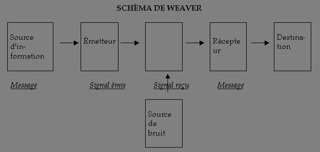
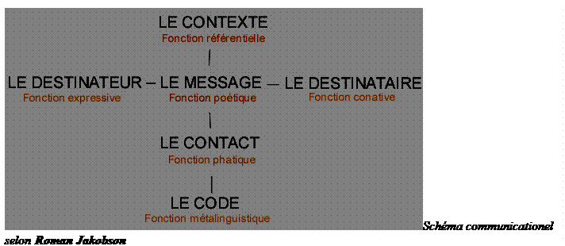

I. INITIATION AUX CONCEPTS FONDAMENTAUX
La polysémie des concepts d'information et de communication rend l'étape de la définition conceptuelle indispensable à toute initiation aux sciences de l'information et de la communication.
De ce fait, ce chapitre est entièrement consacré à cette tâche. Il s'agira pour chacun des concepts de donner une définition générale puis une définition professionnelle du concept. Il s'en suivra une description détaillée du concept question d'en asseoir tout le sens, car comme mentionné ci-dessus avant de se lancer dans des études plus approfondies il serait judicieux d'avoir une compréhension éclairée du concept. Le résumé devrai `rafraîchir la mémoire `des initiés et assurer aux novices une `visite guidée` dans le labyrinthe du savoir.
I.1 QU'EST-CE L'INFORMATION?
I.1.1 Définition
Information [ɛ̃.fɔʁ.ma.sjɔ̃] mot féminin, étymologiquement vient du latin informatio. → voir in-, forme et -ation (Donner forme à). C'est le Moyen pour un individu de connaître son environnement ou la Recherche que lon fait pour sassurer de la vérité dune chose, pour connaître la conduite, les murs dune personne, etc. Il semploie généralement au pluriel. Il peut aussi désigner le Journal télévisé, Tout média qui apporte des informations, une Source de connaissance sur un sujet donné, susceptible dêtre représentée afin dêtre conservée, traitée, communiquée ou enfin toute connaissance, en tant qu'elle est stockée sur un support informatique.
L'information, au sens commun du terme, est le moyen pour un individu de connaître son environnement, notre environnement nous envoie des informations. Nous avons faim parce que notre estomac nous a informé de son besoin. La chaleur d'une flamme nous informe du possible danger de la brûlure. On vous informe de la visite prochaine d'un ami, du prix du brut, des déboires de Britney, ce sont les infos. Certaines informations sont vitales, d'autres non. Aujourd'hui, un occidental moyen est chaque jour bombardé par davantage d'informations. La critique de l'information questionne les effets de l'information. Quelle est la réaction d'un individu à une information qui n'est pas vitale comme la publicité? La crise mondiale de la presse écrite, dont les tirages sont en constante baisse, s'explique selon la critique de l'information non pas à cause d'un problème au niveau de l'émetteur (les sources d'information) mais à cause d'un changement au niveau du récepteur (le public saturé d'information, se demande à quoi lui servent ces informations si elles ne débouchent pas sur une action). L'information est liée à la perception. Média d'information : la radio, la presse écrite, la télévision, l'internet.
Hors contexte, l'information figure le véhicule de ces données comme dans la théorie de l'information et, hors support, elle représente un facteur d'organisation.
Fondamentalement, l'information est liée à un projet. Il peut être construit, comme un programme, ou auto construit, comme la matière. Ce qui fait de l'information le troisième élément du triptyque fondamental Énergie / Matière / Information.
I.1.2 Perception
On qualifie d'information toute donnée pertinente que le système nerveux central est capable d'interpréter pour se construire une représentation du monde et pour interagir correctement avec lui. L'information, dans ce sens, est basée sur des stimuli sensoriels véhiculés par les nerfs, qui aboutissent à différentes formes de perception. (qswkdfckbvljsbvljslv <- Ceci n'est donc pas a priori une information )
Selon G.-B. Davis, l'information représente les données transformées sous une forme significative pour la personne qui les reçoit : elle a une valeur pour ses décisions et ses actions.
I.1.3 Journalisme
Une information est ici la mise en forme écrite, orale ou visuelle (image fixe ou animée) d'un fait ou d'un événement daté, localisé, et (en principe), honnête. L'objectivité étant un concept qui n'existe qu'en mathématiques. Le journalisme traitant de sujets, il est subjectif par nature, mais il doit être néanmoins honnête par rigueur professionnelle. Cette rigueur nécessite de vérifier l'information, en recoupant ses sources. Le journalisme doit en principe décrire des faits de la manière la plus précise possible. Le journalisme est une profession qui s'appuie sur une déontologie. Ces principes rencontrent la nécessité de s'adresser à des lecteurs déterminés. L'information ainsi mise en scène constitue alors la base rédactionnelle d'un journal. On l'oppose généralement à la publicité, dont le caractère commerçant et manipulateur ne fait aucun doute, bien que cette dernière puisse véhiculer des éléments d'information (au sens où tout dans la vie peut être information).
I.1.3.1 Information et mondialisation
Le développement du net et la mondialisation révolutionnent la perception que les hommes ont de l'information et changent radicalement la représentation du monde, devenu "hypermonde". L'hypermonde est consubstantiel du marché mondialisé et de l'hyper-information.
En effet, dans les premières périodes de l'informatique (années 1950 pour les États-Unis aux années 1970), les applications informatiques étaient limitées aux grandes entreprises. Les entreprises étaient peu reliées entre elles, hormis via les réseaux bancaires.
Depuis quelques années, le développement de l'Internet et des messageries électroniques, publiques ou privées, ont permis d'ouvrir à toute personne équipée d'un ordinateur connecté au réseau, les informations accessibles par le réseau Internet. De plus, les entreprises sont souvent organisées en réseau avec leurs partenaires (extranet), ce qui leur permet de communiquer avec leurs parties prenantes.
Il en résulte que la perception du contexte de l'entreprise par les dirigeants et les employés change radicalement.
I.1.4 Administration publique
Dans le contexte de ladministration publique, nous considérons comme « information » toute donnée pertinente dont la collecte, le traitement, linterprétation et lutilisation concourent à la réalisation dune mission gouvernementale, régionale, et départementale.
Les informations d'autorité sont appelées à être gérées dans des registres de métadonnées.
Les autorités publiques sont responsables du processus d'attribution de certificats électroniques, utilisant les critères communs.
En France, le référentiel général d'interopérabilité d'ADELE doit gérer à terme des métadonnées.
Linformation produite et maintenue par une organisation telle que lEtat est une ressource stratégique. Elle constitue la matière première que ladministration reçoit, gère et produit. Linformation permet de mesurer et de contrôler lenvironnement, dopérer selon des objectifs déterminés et de décider dactions à entreprendre.
Dune part, linformation est essentiellement un bien dexpérience. On ne mesure sa valeur que quand on la consomme. Cest pourquoi il est très important que la source des informations soit reconnue et fiable. Dautre part, linformation est un bien non rival : un individu peut consommer une unité dinformation sans que cela empêche dautres individus de consommer la même unité.
Linformation est difficile à produire et facile à reproduire. En particulier lorsquelle est capturée sous forme numérique, elle peut être recopiée sans perte à des coûts négligeables. La technologie permet à linformation dêtre plus accessible et donc augmente sa valeur.
Ce sont ces propriétés qui caractérisent le concept dinformation et qui sont sous-jacentes lorsquune organisation est amenée à gérer cette ressource de manière optimale par rapport à ses objectifs stratégiques.
Linformation est définie comme un stimulus qui modifie la connaissance du receveur. Elle est en général le résultat de la réception et du traitement cognitif dun message provenant dune source de données. Un message est la forme finale doutput dune source de données qui est prêt pour être intégré comme information. Des données sont un ensemble de symboles, dimages, de sons et/ou de concepts qui peuvent être encodés, stockés et transmis. Une source dinformations offre des données pouvant être traitées et transformées en information par un receveur potentiel. Le message reste un ensemble de données jusquà ce que le receveur traite sémantiquement le contenu et lincorpore dans sa connaissance.
Il faut distinguer la source dinformations et le message quelle fournit. La personne cherchant de linformation accède à la source de son choix mais ne connaît pas le contenu du message qui sera fourni. Les sources dinformation sont typiquement des personnes (conseiller, professeur, collègue, groupe de travail, etc.), des services producteurs de données (moteur de recherche, administration, entreprise de marketing, etc.), des médias au sens large (journal, conférence, etc.) et des archives (bibliothèque, base de données, site internet, etc.).
Le cycle dacquisition de linformation par un utilisateur est décrit dans la figure ci-après
La personne décide par exemple pour résoudre un problème de chercher de linformation. Elle ressent ici un besoin qui lamène à identifier des sources dinformation et à en choisir une ou plusieurs. Il faut alors obtenir un ou des messages de la source choisie. Ce message reçu il sagit de linterpréter pour lintégrer à sa connaissance et aider à réduire lincertitude du contexte. Finalement, linformation décodée du message permet à la personne de choisir une action, cest-à-dire de prendre une décision pour résoudre son problème initial.
A chaque étape, on peut se brancher sur lune des étapes antérieures, si par exemple les sources identifiées ne sont pas satisfaisantes ou que linformation obtenue est insuffisante.
Chaque phase de ce cycle est coûteuse puisquelle demande un effort ou une allocation de ressources telle que du temps. De plus, les sources peuvent demander une compensation pour les messages quelles fournissent. Le coût final est donc la somme de tous ces coûts, y compris les étapes de retour qui nont pas abouti.
Il est donc essentiel de savoir sil est utile daccéder à plus dinformation ou darrêter le processus une fois que lincertitude sur la décision à prendre est suffisamment faible.
Par ailleurs, il est aussi important de posséder des informations sur les sources potentielles dinformation elles-mêmes puisque cela permet de rendre le processus de recherche plus efficace.
On peut distinguer deux grands types dinformation : linformation statistique et linformation pragmatique. Linformation statistique se rapporte à quune personne sait indépendamment de comment elle lutilise pour mettre en uvre ses actions. Elle est caractérisée par les qualités deffectivité, defficience, de disponibilité, de fiabilité, dintégrité, de conformité et de confidentialité. Linformation pragmatique sert à décider, cest-à-dire à porter son choix sur une action. Elle est caractérisée par les qualités de pertinence, de complétude et de prise de connaissance au moment opportun. Un message peut contenir de linformation statistique mais non pragmatique. Le contraire semble moins possible.
On ne peut pas ne pas citer les travaux de Claude Shannon dans la théorie de linformation. Ceux-ci approchent les problèmes de la mesure de la quantité dinformation stockée ou transmise et de la bande passante dun canal de communication faisant passer de linformation. Cette vision qui est très pertinente pour les ingénieurs et les techniciens nest que peu utilisable dans notre cadre de travail.
Le but (ambitieux) de cette dimension, à terme, est de pouvoir mesurer ou au moins didentifier les déterminants de la valeur de linformation afin de mieux comprendre comment la gérer optimalement. Ce sujet est complexe et large, mais dimportance si lon veut comprendre comment utiliser au mieux cette ressource première de le-Société(société électronique fondée sur l'information) et de ladministration.
I.1.5 Théorie de l'information
Selon la théorie de l'information, des données contiennent de l'information quand celles-ci ne sont que peu compressibles et qu'elles sont complexes. En effet, l'information contenue dans un message composé d'une seule lettre se répétant un grand nombre de fois tel que « AAAAAAAAA... » est quasiment nulle (on parle alors de faible néguentropie).
Kolmogorov a tenté de définir le contenu d'information d'une donnée par la taille du plus petit programme permettant de la fabriquer. Ainsi, pi aurait une complexité moyenne malgré son nombre infini de chiffres, le programme permettant d'en construire la suite (infinie) de nombres tenant sur une seule page.
La conception la plus rependue de l'information est liée au couple message + récepteur, le dernier possédant des implicites valorisant le message (et, de fait, tout message est incompréhensible sans ces implicites supposés; ainsi un message en chinois pour qui ne comprend pas le chinois).
Ainsi, la phrase "Médor est un chien" contient plus d'information que "Médor est un quadrupède", bien que la seconde contienne plus de lettres. La différence est à mettre au compte de la connaissance d'un dictionnaire implicite et faisant partie du contexte, qui nous permet de savoir qu'un chien est nécessairement - sauf amputation - un quadrupède, l'inverse n'étant pas vrai.
Les notions de quantité d'information, d'entropie et d'information mutuelle font l'objet d'une discipline spécialisée, initiée par Claude Shannon.
I.1.5.1 Hyper-information
« Hyper-information » est un substantif employé par Gérard Ayache dans son essai La Grande Confusion à partir de la racine grecque « huper » (au-dessus, au-delà). Le mot hyper-information semploie comme nom commun. Ladjectif est « hyper-informationnel (le) ».
Avec lémergence du numérique, des réseaux et de la convergence des technologies, linformation a changé radicalement de nature. Cette mutation a favorisé lémergence dun univers technologique foisonnant mais elle a aussi révélé de nouveaux territoires de la conscience cognitive.
Linformation se situe désormais dans un système complexe qui, selon Ayache, semble obéir à ses propres règles dévolution et à ses propres finalités. Lintégration des individus, du système sociétal et du système informationnel est devenue totale, donnant naissance à lhyper-information.
« Lhyper-information est une entité élémentaire qui ne possède aucune signification déterminée mais qui soppose à labsence de signification. Lhyper-information se manifeste sous la forme dune force. Cette force est toujours physiquement identique, quelle que soit la multiplicité et les changements des significations quelle véhicule.
Le mouvement de la force hyper-informationnelle crée le sens et lunifie. Il peut créer ainsi de la valeur. Cette valeur est protéiforme : elle peut être symbolique, culturelle, politique, économique, éthique, sociétale, anthropologique Le sens créé est une variable fonctionnelle qui dépend de la structure prise par la force hyper-informationnelle et du contexte environnemental dans lequel elle sexerce. Lhyper-information nest associée à aucun espace sémantique particulier. Elle peut tous les générer indifféremment.
Lhyper-information est une matière abstraite immanente et transcendante. Elle est immanente car observable. Mais elle peut aussi transcender infiniment tous les phénomènes sensibles. La force hyper-informationnelle connecte à la fois le visible et son idée, le virtuel et le réel, le matériel et limmatériel.
Lhyper-information ne connaît pas lespace. Elle na ni frontière ni territoire. Elle ne connaît pas le temps, sa vitesse est illimitée. En revanche, elle est capable de créer des espaces-temps spécifiques.
Lhyper-information na pas de chemin de prédilection ; sa force la transporte dans tous les circuits du possible : technologiques, culturels, sociétaux, cognitifs, biologiques, etc. La force hyper-informationnelle possède la puissance de transformer profondément les sociétés, les cultures et les hommes dans leur organisation et dans leur situation dans le monde. Elle est de nature civilisationnelle et anthropologique.
Lirruption de lhyper-information est de nature à modifier tous les critères dappréciation de lêtre humain : par rapport au réel, par rapport à la vérité, par rapport au temps, par rapport à lespace. Elle transforme lhomme dans ses émotions, dans son identité et dans sa relation aux autres. Elle peut en modifier la nature biologique.
Lhyper-information na pas didéologie et nen est pas une. En revanche, elle peut servir de moteur à toute idéologie. Elle possède donc la capacité de changer le monde et de modifier le destin des hommes. »
I.1.5.2 Théorie de la décision
La théorie de la décision ne considère comme information que ce qui est de nature à entraîner ou modifier une décision. Dans le cas contraire, il s'agit d'un simple bruit. On pense souvent que l'information peut être définie comme une donnée réductrice d'incertitude. Dans bien des cas, pourtant, avec la mondialisation et le développement des réseaux internationaux, une information juste peut remettre en cause une décision déjà prise. Il existe aussi des informations fausses, biaisées ou présentées de manière telle que les destinataires ont tendance à prendre de mauvaises décisions.
Il est donc vital de s'assurer de la pertinence des informations, et d'organiser des circuits d'informations tels que les informations disponibles soient bien traitées pour être distribuées aux bonnes personnes, au bon moment. C'est l'objet de l'intelligence économique. Une bonne méthode d'intelligence économique doit prendre en compte les informations issues du contexte de l'entreprise.
I.1.5.3 Systémique
L'information (ou néguentropie) est un facteur d'organisation qui s'oppose à la tendance naturelle au désordre et au chaos (ou entropie). Un organisme vivant, comme le corps humain, ne peut rester organisé que par les informations qui le lient. Toute rupture d'information (nerveuse, chimique, etc.) entraîne la dégénérescence d'une partie ou de l'ensemble.
Cela tient au fait que l'information, la matière et l'énergie sont indissociables. Connaître la proportion de chacune d'entre elles permet de définir le degré de complexité d'une structure et, partant, son niveau systémique. Car le niveau d'un système est avant tout déterminé par ses constituants, eux-mêmes étant des systèmes constitués à un autre niveau, chaque niveau étant défini par le type d'énergie qui est mis en uvre. La systémique met donc en avant l'imbrication de structures, chacune étant mue par une dynamique, donc une énergie spécifique. En définitive, l'information met en communication les éléments d'un système dynamique.
Un être vivant offre un bon exemple descriptif du fonctionnement d'un système. À l'échelle globale, c'est une dynamique chimique et gravitationnelle. Les cellules sont organisées autour de dynamiques chimiques et à l'intérieur de chacune d'entre elles, des échanges électromagnétiques et ioniques maintiennent la cohésion. On pourrait continuer le raisonnement jusqu'aux échelles moléculaires, atomiques et particulaires. Mais nous sortons là du cadre du vivant.
Chaque étage de la construction est ainsi une spécificité énergétique, matérielle et informative. Tant que l'équilibre est maintenu, l'information, qui n'est dans ce cadre rien d'autre que de la matière, est véhiculée par le biais d'une dynamique énergétique spécifique du niveau en question.
L'information y est inversement proportionnelle à sa probabilité. En clair, énoncer l'évidence n'apporte pas beaucoup d'information, alors que diffuser une information inattendue est plus utile.
I.1.6 Histoire
Le projet de fonder une « science de l'information et de la documentation » spécifique s'est affirmé sous l'impulsion d'acteurs comme Pierre Larousse (1817-1875), Melvil Dewey (1851-1931), Paul Otlet (1868-1944), Jean Meyriat (1921- ). Le point de départ en a été de dissocier l'information, construction sociale et intellectuelle, de l'ensemble des objets matériels qui, en circulant, la conditionnent sans la définir. On doit aux spécialistes de cette science d'avoir posé que l'information ne circule pas (elle n'est pas un objet) mais qu'elle se redéfinit sans cesse (elle est une relation et une action). Ce projet est lié, dès la fin du XIXe siècle, au développement d'une recherche à visée industrielle et au rêve d'un savoir planétaire. Mais plutôt que tout assimiler par l'idée d'un « système d'information » (idée plus récente dont le succès est dû aux développements informatiques), ces auteurs distinguent méthodiquement entre le support, le document, l'information et le savoir : effort de distinction qu'il faut redécouvrir aujourd'hui. (Yves Jeanneret)
I.1.7 Résumé
L'information se définit en effet par son improbabilité, sa singularité aussi bien physique que sémantique. Une simple répétition ne constitue pas une information. Un signal (comme une sonnerie) apparaît toujours en se détachant d'un fond. L'information se caractérise donc par une discontinuité, à l'opposée d'une force continue.
La valeur d'une information étant d'apporter une réduction de l'incertitude (ou la visibilité de l'invisible), cela implique qu'il y a toujours de l'incertitude et qu'il y a toujours de l'improbable, et donc que toute information est imparfaite et doit toujours être corrigée. C'est ce que réalise un thermostat et il faut bien comprendre l'opposition entre une régulation et une programmation mécanique. Vous ne savez pas combien vous aller utiliser de gaz ou de fuel pour vous chauffer. Vous auriez pu programmer : « Je vais utiliser tant de fuel par minute ou par heure ». Au lieu de cela, vous mettez la température désirée et vous avez certes le risque de consommer plus que ce que vous vouliez, mais vous avez beaucoup plus de chances malgré tout de consommer moins que si vous vous étiez contenté de programmer le débit sur moyen ou fort comme sur les appareils dépourvus de thermostat.
Non seulement l'information, est improbable, discontinue et lève une incertitude tout en étant imparfaite, exigeant des corrections incessantes, mais surtout, il lui faut un récepteur. C'est-à-dire qu'il n'y a pas d'information en soi. L'information n'est pas un concept simple, on ne peut pas dire « c'est une caractéristique de tel objet » puisque c'est le récepteur qui la constitue comme telle. L'information est un élément d'un ensemble reliant émetteur et récepteur.
Enfin on peut dire aussi que ce qui caractérise l'information c'est d'être le signe d'autre chose. Ce n'est pas toujours évident et on n'a pas le temps d'en discuter en détail, mais le fait que l'information soit le signe d'autre chose est primordial puisque cela montre qu'on ne peut avoir qu'un rapport indirect aux choses, ce qui veut dire que le monde, par rapport au récepteur de l'information, est toujours transcendant. On n'y a pas accès directement. Ce qui peut sembler un défaut se révèle au contraire comme la puissance même de l'information. C'est le fait de renvoyer à autre chose qu'elle-même qui va la rendre productive. L'énergie ne peut se reproduire elle-même alors que le fait de pointer avec l'information sur quelque chose d'autre va permettre sa reproduction sans dépenser d'énergie ou presque. C'est une caractéristique cruciale de l'information puisqu'elle est à la base de la vie. Il faut que l'ADN puisse se reproduire, sinon il n'y aurait pas de vie. Or pour qu'il puisse se reproduire, il faut que ce soit à la fois une structure discrète (qui n'est pas continue) et qu'il y ait des mécanismes de corrections d'erreurs. C'est la grande différence entre un signal (une énergie) et l'information qu'il porte. En effet, le signal physique va être brouillé par le bruit et va perdre de son énergie. On pourra toujours le réamplifier après mais il y aura toujours de la perte, de l'entropie. Quand on est dans l'analogique, on n'a jamais une reproduction totale alors qu'avec le numérique (et l'information en général) on peut avoir une reproduction absolument parfaite, non pas parce qu'il n'y aurait plus d'entropie du tout, mais grâce à la correction d'erreur permise par une redondance de l'information.
On voit bien que l'univers de l'information et de la reproduction ne peut absolument pas se confondre avec celui de l'énergie et de l'entropie, mais ce qui achève de les opposer c'est le caractère disproportionné entre une information et ses effets. En effet, ce qui caractérise l'énergie ou la force c'est la proportionnalité entre la cause et l'effet alors que vous pouvez avoir une toute petite information qui change tout. Vous pouvez avoir un courant très faible qui va commander une énorme puissance électrique. C'est à chaque fois un effet de seuil binaire. L'effet peut être zéro mais l'effet peut être aussi de tout changer. Ce qui veut dire aussi qu'un petit groupe, ou une minorité, peut tout changer, voire une seule personne. On n'est plus dans un rapport de force comme on a coutume de le penser dans la société de l'énergie.
Il y a de quoi s'étonner des confusions qui perdurent encore entre ce qui relève de la physique et ce qui relève de l'information. Pour le comprendre il faudrait revenir sur les trois sources du concept scientifique d'information (alors que la notion d'information existait déjà bien avant, que ce soit dans la police, l'exploration de nouvelles contrées, voire la médecine, mais elle était difficilement mesurable).
Le concept d'information s'est d'abord imposé dans les statistiques qui ont permis de quantifier l'information (Fischer). On était donc déjà dans le numérique mais les statistiques s'appliquaient à des phénomènes physiques comme les gaz.
C'est ensuite la théorie du signal qui reprendra la notion, Shannon ayant montré qu'on pouvait identifier une information par sa "redondance improbable". Bien qu'on parle ici de théorie de la communication supposant un émetteur et un récepteur, on ne s'intéresse alors qu'au signal physique et à sa transmission. C'est bien là ce qui sera à l'origine de la confusion avec la physique donnant l'impression que ce serait des phénomènes physiques continus qu'on veut reproduire grâce à des filtres ou des amplifications (dolby). Comme on ne peut jamais reproduire exactement le signal et qu'il y a des pertes inévitables, on va se rendre compte que ce qu'on cherche à garder c'est une forme, une information caractérisée par une certaine définition ou approximation, un échantillonnage qui peut être numérisé et n'est donc plus continu.
Ce n'est qu'avec les boucles de régulation et la cybernétique qu'on entre vraiment dans la théorie de l'information. Le thermostat constitue son paradigme mais les travaux théoriques ont surtout concerné la correction de tir des DCA pendant la deuxième guerre mondiale. En effet, le principe d'une boucle de rétroaction (ou d'un thermostat) c'est de se régler sur l'écart entre le résultat mesuré et la cible. On n'est plus alors dans la physique mais dans le pilotage par objectifs introduisant la finalité dans la chaîne des causes et rejoignant les régulations biologiques. En effet, alors que la physique est le domaine de la causalité (où les causes ont des effets), le domaine de l'information ou de la vie est celui des régulations et des finalités (où les effets deviennent causes). Mon temps étant écoulé je ne peux en dire plus mais on voit que l'opposition est totale entre ces deux logiques dont l'une ne fait que prolonger le passé alors que l'autre vise l'avenir.
I.2 QU'EST-CE LA COMMUNICATION?
I.1.1 Définition
Communication [kɔ.my.ni.ka.sjɔ̃] mot féminin, étymologiquement vient du latin communicare (être en communion avec). C'est l'action de communiquer , le résultat de cette action ou le moyen par lequel s'effectue cette action. Il se communique généralement des informations, des renseignements, des données. Il signifie aussi Procédure , Relation, commerce, correspondance.
La communication est un processus réciproque d'expression de données immédiates (mouvement, émotion, sentiment), de construction de données mentalement structurées (information), d'élaboration de méta-données (connaissance), de synthèse partielle ou globale d'un moment ou d'une durée (pensée), processus hyper-complexe lié à une activité partagée (entre au moins deux personnes) de recherche de signification (générale) et de sens (singulier), activité inspirée par un désir d'approchement de l'univers d'autrui. (Georges Adamczewski, 2005)
I.1.2 Description
Un premier mouvement caractéristique de la communication est celui qui émane d'une personne qui produit du signe, de la signification et du sens à l'intérieur de son propre univers. Que ce soit au travers du langage ou de modalités du comportement (attitudes, mimiques, gestes, etc.), il y a, de façon incessante, une activité symbolique qui se construit dans l'instant (perceptions, émotions) et dans la durée (mémoire, apprentissage, conceptualisation, etc.). Cette activité se situe à niveaux variés et variables de conscience ou de non-conscience. Chez l'être humain, elle est auto-constructive : chaque personne construit son propre monde et sa singularité, mais à la manière d'un architecte d'intérieur qui ne dispose pas de tous les plans de l'habitat et qui n'a qu'une vision assez restreinte de son environnement.
Le deuxième mouvement - volontaire ou involontaire - se caractérise par l'envoi ou l'échappée de données qui proviennent de l'univers personnel de chacun. Cette translation peut être passive (non-intentionnelle) ou active (intentionnelle). Mais ce qui circule à la manière de flux entrelacés ce sont des données qui doivent être déchiffrées, mais qui sont muettes quant au sens singulier dont elles sont la trace. Autrement dit, il y a toujours au moins deux messages dans un processus de communication intentionnelle : celui qui est concocté pour lui-même chez la personne qui s'exprime et celui qui est reconstitué par la personne qui perçoit et reçoit des données. Autrement dit, il n'y a pas de message transmis, mais des éléments épars, parfois liés en paquets, une sorte de puzzle incertain, généralement incomplet, à reconstituer sur le plan de la signification (linguistique) et du sens (personnel).
Le troisième mouvement se caractérise par l'activité reconstructive de la personne qui retraite les données qui lui sont offertes (ou disponibles). Deux possibilités alors : soit elle va les interpréter, en les traitant, par déduction, dans le contexte singulier de son propre univers symbolique, soit elle va tenter, par induction, de deviner le cadre de référence à l'intérieur duquel elles ont un sens pour l'interlocuteur - et c'est là où intervient l'empathie.
Pour que ces trois mouvements puissent engendrer un processus communicationnel, un quatrième mouvement est donc nécessaire, celui qui va être initié par l'auteur du deuxième message, afin de tenter de le confronter au premier, afin de pouvoir rectifier sa propre reconstitution. En fait c'est à un double mouvement auquel un observateur externe peut alors assister : chaque partenaire va reformuler - c'est-à-dire formuler autrement le sens intérieur qu'il a construit : la personne qui s'est exprimée la première va prendre conscience de ses propres zones d'ombre ou de confusion, et relancer une nouvelle tentative d'expression, la deuxième va relancer autant que nécessaire ses approximations.
Dans ces conditions, et au vu de ces quatre caractéristiques, un processus de communication peut-il s'achever, trouver son accomplissement ? On pourrait dire, avec une pointe d'humour, que la tragédie communicationnelle - chacun étant enfermé dans son univers - est sans issue. La communication, entendue comme transmission d'un message déchiffrable grâce à un code commun est réservée aux machines et à la plupart des animaux. Chez l'humain, quelque chose de cette harmonie pré-établie est brisé. Seules les dictatures ont tenté, à de nombreuses époques, de restaurer cette vision inhumaine d'un monde uniforme, unanime et unicode où la singularité de chacun est ignorée ou effacée.
Une définition simplifiée pourrait cependant apporter un regard plus optimiste : il y a communication dès qu'il y a rapprochement de deux univers personnels distants, bref, lorsqu'il y a rencontre. Une rencontre se reconnaît justement à la mise en mouvement des partenaires l'un vers l'autre, dans une proximité croissante, proximité qui malgré tout n'abolit jamais la distance, ni la singularité de chacun. Il serait alors possible de définir la non-communication comme une absence de mouvement vers l'autre ou comme un mouvement d'éloignement, voire d'exclusion.
I.1.3 Construction
Un des premiers obstacles à la compréhension du concept de communication est le modèle émetteur-récepteur qui est encore aujourd'hui considéré comme une évidence, un allant-de-soi. Ce modèle, aujourd'hui rétrogradé en idéologie ambiante, repose sur au moins deux types de métaphores : celle du projectile, comme la flèche ou la boule de billard, et celle de la machine, comme le téléphone ou maintenant l'ordinateur. L'image matérielle d'un objet qu'on lance vers ou sur une cible, ou celle d'une circulation de données au long d'un câble de connexion, se rejoignent : la chose qui se déplace le fait selon une procédure impulsée au départ de sa course et réceptionnée à l'arrivée. Tout semble bien sûr encore plus simple lorsque la trajectoire est canalisée, puisqu'alors elle ne nécessite point une adresse particulière de la part du lanceur.
Vous l'avez sans doute compris, la chose en question qui est transportée, c'est le message. Mais, erreur fatale pour cette conception primitive ou technicienne de la communication, le message entendu comme pure chose matérielle est une affirmation sans fondement : à moins, bien sûr, de considérer qu'un boulet de canon est un message fracassant ou que le mot chien peut vous mordre la jambe, dès qu'il a atteint sa cible.
La conception classique de la communication ne prend pas en compte la dimension - immatérielle - du sens, en se contentant d'indiquer la nécessité d'un code commun, ce qui est une deuxième erreur fatale. Car, ramener le langage humain, et donc chaque langue à un code est digne d'une blague pour linguistes espiègles : non seulement, la langue est un système et non un code, mais il n'y a personne qui parle la même langue, et, au travers de cette langue rebelle à l'uniformité sémantique, chaque personne crée son propre univers signifiant.
Troisième erreur du modèle séquentiel de la communication, départ-chemin-arrivée, c'est que le langage n'est pas le seul mode d'expression d'une personne. Au registre verbal il y a lieu d'ajouter celui du comportement, de la conduite. L'être humain n'est pas qu'une machine à parler ou à penser, c'est aussi un organisme vivant, avec ses émotions, ses passions, ses sentiments et ses attitudes. Et le propre de ces manifestations de la personne est de se produire non dans la successivité d'une séquence de communication discursive, mais dans la simultanéité.
Au travers de cette critique du modèle télégraphique ou téléphonique de la communication, on voit donc poindre une autre vision - orchestrale et polyphonique. Dans cette nouvelle approche, c'est l'organisme et non plus la machine qui est la métaphore principale. Il n'y a plus ici d'émetteur et de récepteur, de projectile ou de boule de billard. Nous ne sommes plus dans un univers d'objets qui se déplacent d'un point à un autre selon une trajectoire. La communication n'est plus une séquence au cours de laquelle des signes sont transportés, elle devient omniprésente.
Dans cette perspective, tout est communication : la communication est comme l'enveloppe et la chair de chaque système vivant. Car ce sont les relations qui sont premières et non les choses, qui en sont seulement l'expression, voire l'épiphénomène. Il y a alors une inversion, une révolution complète : la communication est comme le fond - le background - sur lequel surgissent les figures et les formes. Chaque individu est alors considéré non comme une entité émettrice isolable, mais comme un noeud dans un réseau.
Ce modèle aboutit néanmoins, comme le premier, à une impasse. Il y a d'ailleurs une similitude entre ces deux visions : ce sont des théories trop simples pour rendre compte de l'hypercomplexité de la communication humaine. Elles évitent de toucher à ce qui est probablement une des spécificités de l'espèce humaine, à savoir la recherche du sens et la réflexion sur les valeurs : la première est techniquement opérationnelle et la deuxième est pragmatiquement autosuffisante, mais elles se montrent fragiles dès qu'on les interroge du point de vue de l'humain. Si l'on osait, on pourrait dire même dire qu'elles sont philosophiquement absentes ou inconsistantes, d'où leur succès dans les idéologies contemporaines.
Au demeurant, le concept de communication évolue avec la société qui le rend pensable et qui le diffuse. Que l'on soit passé d'une vision de l'homme-machine à celle de l'homme-être-vivant est déjà un progrès. Mais on est encore loin, socialement parlant, de la reconnaissance de la personne humaine dans toutes ses dimensions.
I.1.4 Résumé
Pour gloser sur la figure mythique la plus formidable que l'occident ait créé, on peut dire que lhomme, grâce au feu, est devenu un géant technologique mais quil demeure un nain politique. Les hommes dominent la nature mais ils nont pas encore appris à vivre ensemble et à communiquer. Tout se passe donc comme si après Prométhée (qui nous a offert le feu) nous étions encore en attente de ce dieu qui symbolise léchange, le commerce et la communication : les Grecs lappelaient Hermès, les Romains Mercure. En termes plus savants, on peut dire avec Habermas que lhumanité moderne a développé une rationalité stratégique (dans son rapport à la nature) au détriment dune rationalité communicationnelle (qui concerne les rapports des hommes entre eux). On mesure ainsi limportance considérable du rôle que les Sciences de lInformation et de la Communication (SIC) ont à jouer à lorée du XXIe siècle.
La communication est une invention du XXe siècle. Il avait
déjà fallu plusieurs siècles pour quen Occident naisse lindividu, figure
singulière et intériorité reconnue.
Lacte de naissance de la communication porte,
chronologiquement, la marque dune première parenté, celle de Norbert Wiener,
mathématicien, fondateur de la cybernétique. Cest à une véritable
effervescence intellectuelle que lon assiste autour de lui à partir des années
1940. Lidée-phare, qui a eu des retombées dans de nombreux domaines
scientifiques, est de prendre en considération prioritairement les relations
entre éléments plutôt que les éléments en eux-mêmes. Autrement dit, dans
cette perspective nouvelle, ce sont les relations qui définissent les éléments
ou entités, relations qui tissent les systèmes, relations entre systèmes.
Limpact sur une théorie de la communication se fit quelque peu attendre, et ne
seffectua quavec lapproche de lEcole de Palo
Alto, à la suite des travaux de Gregory Bateson.
Une seconde parenté, qui reste néanmoins la référence
principale aujourdhui, nous vient de lingénierie, dun domaine technologique
particulier, celui du téléphone et de la télégraphie. Deux ingénieurs désormais
célèbres, Shannon et Weaver ont tenté de modéliser la
communication à distance, ou plus exactement, la matérialité de ce type de
liaison. Doù le fameux schéma encore colporté de nos jours : un émetteur
transmet un message à un récepteur via un canal.
La vision ordinaire de la communication entre individus
repose sur un présupposé fortement installé : lémetteur dispose
dune certaine quantité de matière, disons dun paquet dinformation (le
message) et en effectue le transport vers un récepteur. Le transport
seffectue dans des conditions (bruit, interruption) qui peuvent parfois
parasiter une telle réception.
La première conséquence dune telle approche matérialiste
de la communication est de considérer que le colis envoyé contient toute la
marchandise, cest-à-dire que le sens est lui aussi transporté.
La vie de tous les jours nous montre généreusement à quel
point cela est faux. Sil y a effectivement un aspect physique de la
communication, il est de lordre de du paquet sonore ou de la trace écrite. Si
le destinataire dispose de la langue utilisée par lémetteur, il recevra, après
décodage, une syntaxe et une série de significations. Mais cela est le
maximum possible.
Rappelons le principe de base, déjà développé dans les
cours précédents : la signification est donnée, le sens est
construit. Le dit récepteur, une fois le colis reçu et ouvert, nen na pas
fini de sinterroger, car le dit message est comme un message à trous ou un
abrégé chargé dindices à déchiffrer. Cette incomplétude est propre à toute
émission sonore et à toute production écrite. Le dit récepteur est en fait
celui qui, grâce à son imagination et à sa réflexion, invente le sens de
ce quil a reçu à la manière dune énigme.
Daucuns diraient même quil ny a pas de message puisque
le paquet dinformation ne contient ni la clé de son intention, ni celle de son
contexte, ni même celle de ses conséquences. Sil y a un « message »,
ce ne peut être que le résultat du travail de linterlocuteur, en tout
cas, ce qui est sûr, cest quil na pas été transporté.
Le caractère non-transportable du sens peut étonner certains, habitués quils ont été à ne pas
distinguer la signification du sens. Ce quil faut arriver à comprendre ici se
résume en un énoncé : la signification est commune, collective ou
collectivisée, tandis que le sens est toujours singulier.
Dune certaine façon, le langage humain, de par sa
dimension sociale, est impropre à exprimer ou à décrire ce qui nappartient
quà soi, à formuler ou à faire entendre une expérience intérieure ou
personnelle. Et pourtant, chacun parvient au moins un peu dans sa vie à
construire ou à discerner du sens au travers de la parole ou de lécriture.
Pour avancer dun pas de plus vers un éclaircissement de ce
paradoxe, il est nécessaire de bien distinguer le transportable du
non-transportable : la signification est une combinaison plus ou
moins complexe déléments reliés par une logique, traduits dans une
syntaxe et puisant dans la richesse lexicale dune langue ; le sens
se produit, lui, comme un événement singulier et non comme un élément ou
une structure.
La langue est un système non-éphémère, disponible à
tout moment, réutilisable à loisir, perfectible, qui est le vecteur de la
signification. Sa stabilité relative, sa nature conventionnelle, son rôle
sociétal, en font un référent commun pour les individus qui ladoptent. Elle
permet de poser de la chose signifiante dans lentre-deux dune relation
humaine.
Mais en amont de la chose signifiante, lave éteinte dun
volcan en éruption, il y un x ou un y inconnus, une zone de présence,
une subjectivité en acte. Mais en aval de la chose signifiante, il y a
également quelquun, une personne.
Un événement jaillit dans la sphère, dans lunivers
de lun, un événement qui sinscrit dans le ciel intérieur, un événement qui
parfois ne sort jamais de sa prison de verre. Cet événement ne dure parfois
quun instant, quelque chose prend sens pour celui qui en fait lexpérience. Et
le besoin terriblement humain de faire appel à autrui, de le solliciter ou de
partager avec lui, le fait sortir de son silence ou de son dialogue intérieur.
Il va alors lancer à autrui des éléments, des parcelles ou des fragments
dunivers, jamais la totalité. Et il va se rendre rapidement compte que le sens
auquel il tient - ou même qui le fait tenir dans sa vie - est comme pulvérisé
dans sa tentative de transmission. Bref, lévénement sensible et intelligible
qui sest produit sest brutalement métamorphosé en scories, en significations
communément estampillées.
De lautre côté de la rivière, linterlocuteur, sil prend à
la lettre ces significations reçues, ny verra que de lordinaire flot de
paroles ou balaiera dun revers de manche toute cette poussière de mots. Par
contre, sil infère lexistence dun quelquun ou dune quelquune, sil fait
lhypothèse dun univers singulier chez lautre, il commencera à se
mettre au travail du sens. Et si, par chance ou par ténacité, il parvient à son
but, il aura réussi à transformer une figure géométrisée par la langue en un
événement pour lui.
Peu importe, à ce stade, sil est parvenu ou non à une
compréhension de lautre, ce qui compte pour quil ait déjà communication cest
cette événementialité : il sest passé
également quelque chose pour lui.
Jai cru pendant longtemps, un peu comme tout le monde, que
la compréhension de lautre était le seul critère de la communication. Mais
cétait encore renouer avec le mythe de la réception pure. Si je suis un être
singulier, si lautre est un être singulier, il nous est néanmoins possible de
nous faire signe, pour que dune rive à lautre, chaque signe puisse être transformé
en instantané de sens. Resterait à savoir dans quelle mesure chacun
souhaite ou non le rapprochement ou la proximité dans cette distance qui nous
porte et nous pousse à lexistence singulière.
II. APPROCHE THÉORIQUE DES CONCEPTS
II.1 THÉORIES DE L'INFORMATION
II.1.1 Introduction
La théorie de l'information se préoccupe des systèmes d'information, des systèmes de communication et de leur efficacité. La notion de système d'information ou de communication étant large, il en va de même de la théorie de l'information.
Ce domaine trouve son origine scientifique avec Claude Shannon qui en est le père fondateur avec son article A Mathematical Theory of Communications publié en 1948.
Parmi les branches importantes, on peut citer :
· le codage de l'information,
· la mesure quantitative de redondance d'un texte,
· la compression de données,
· la cryptographie.
La force de cette théorie est de ne pas chercher à définir la notion d'information, tout comme l'arithmétique ne définit pas ce qu'est un nombre.
L'apparition de la théorie de l'information est liée à l'apparition de la psychologie cognitive dans les années 1940 1950.
II.1.2 Historique
La théorie de l'Information résulte initialement des travaux de Ronald Aylmer Fisher. Celui-ci, statisticien, définit formellement l'information comme égale à la valeur moyenne du carré de la dérivée du logarithme de la loi de probabilité étudiée. À partir de l'inégalité de Cramer, la valeur d'une telle information est proportionnelle à la faible variabilité des conclusions résultantes. En termes simples, moins une observation est probable, plus son observation est porteuse d'information. Par exemple, lorsque le journaliste commence le journal télévisé par la phrase "Bonsoir", ce mot, qui présente une forte probabilité, n'apporte que peu d'information. En revanche, si la première phrase est, par exemple "La France a peur", sa faible probabilité fera que l'auditeur apprendra qu'il s'est passé quelque chose, et, partant, sera plus à l'écoute.
D'autres modèles mathématiques ont complété et étendu de façon formelle la définition de l'information.
Claude Shannon et Warren Weaver renforcent le paradigme. Ils sont ingénieurs en télécommunication et se préoccupent de mesurer l'information pour en déduire les fondamentaux de la Communication (et non une théorie de l'information). Dans Théorie Mathématique de la Communication en 1948, ils modélisent l'information pour étudier les lois correspondantes : bruit, entropie et chaos, par analogie générale aux lois d'énergétique et de thermodynamique. Leurs travaux complétant ceux d'Alan Turing, de Norbert Wiener et de John von Neumann (pour ne citer que les principaux) constituent le socle initial de la théorie du signal et des « Sciences de l'Information ».
Pour une source X comportant n symboles, un symbole i ayant une probabilité pi d'apparaître, l'entropie H de la source X est définie comme :
C'est au départ le logarithme népérien qui est utilisé. On le remplacera pour commodité par le logarithme à base 2, correspondant à une information qui est le bit. Les considérations d'entropie maximale (MAXENT) permettront à l'inférence bayésienne de définir de façon rationnelle ses distributions a priori.
L'informatique constituera une déclinaison technique automatisant les traitements (dont la transmission et le transport) d'information. L'appellation « Technologies de l'Information et de la Communication » recouvre les différents aspects (systèmes de traitements, réseaux, etc.) de l'informatique au sens large.
Les sciences de l'information dégagent du sens depuis des données en s'appuyant sur des questions de corrélation, d'entropie et d'apprentissage (voir Data mining). Les technologies de l'information, quant à elles, s'occupent de la façon de concevoir, implémenter et déployer des solutions pour répondre à des besoins identifiés.
Adrian Mc Donough dans Information economics définit l'information comme la rencontre d'une donnée (data) et d'un problème. La connaissance (Knowledge) est une information potentielle. Le rendement informationnel d'un système de traitement de l'information est le quotient entre le nombre de bits du réservoir de données et celui de l'information extraite. Les data sont le cost side du système, l'information, le value side. Il en résulte que lorsqu'un informaticien calcule la productivité de son système par le rapport entre la quantité de données produites et le coût financier, il commet une erreur, car les deux termes de l'équation négligent la quantité d'information réellement produite. Cette remarque prend tout son sens à la lumière du grand principe de Russel Ackoff qui postule qu'au delà d'une certaine masse de données, la quantité d'information baisse et qu'à la limite elle devient nulle. Ceci correspond à l'adage "trop d'information détruit l'information". Ce constat est aggravé lorsque le récepteur du système est un processeur humain, et pis encore, le conscient d'un agent humain. En effet, l'information est tributaire de la sélection opérée par l'attention, et par l'intervention de données affectives, émotionnelles, et structurelles absentes de l'ordinateur. L'information se transforme alors en sens, puis en motivation. Une information qui ne produit aucun sens est nulle et non avenue pour le récepteur humain, même si elle est acceptable pour un robot. Une information chargée de sens mais non irriguée par une énergie psychologique (drive, cathexis, libido, ep, etc.) est morte. On constate donc que dans la chaîne qui mène de la donnée à l'action:- données - information - connaissance - sins - motivation, seule les deux premières transformations sont prises en compte par la théorie de l'information classique et par la sémiologie. Kevin Bronstein remarque que l'automate ne définit l'information que par deux valeurs : le nombre de bits, la structure et l'organisation des sèmes, alors que le psychisme fait intervenir des facteurs dynamiques tels que passion, motivation, désir, répulsion etc. qui donnent vie à l'information psychologique.
II.1.3 Exemples d'information
Une information désigne, parmi un ensemble d'événements, un ou plusieurs événements possibles.
En théorie, l'information diminue l'incertitude. En théorie de la décision, on considère même qu'il ne faut appeler information que ce qui est susceptible d'avoir un effet sur nos décisions (peu de choses dans un journal sont à ce compte des informations...).
En pratique, l'excès d'information, tel qu'il se présente dans les systèmes de messagerie électronique, peut aboutir à une saturation, et empêcher la prise de décision.
II.1.3.1 Premier exemple
Soit une source pouvant produire des tensions entières de 1 à 10 volts et un récepteur qui va mesurer cette tension. Avant l'envoi du courant électrique par la source, le récepteur n'a aucune idée de la tension qui sera délivrée par la source. En revanche, une fois le courant émis et réceptionné, l'incertitude sur le courant émis diminue. La théorie de l'information considère que le récepteur possède une incertitude de 10 états.
II.1.3.2 Second exemple
Une bibliothèque possède un grand nombre d'ouvrages, des revues, des livres et des dictionnaires. Nous cherchons un cours complet sur la théorie de l'information. Tout d'abord, il est logique que nous ne trouverons pas ce dossier dans des ouvrages d'arts ou de littérature; nous venons donc d'obtenir une information qui diminuera notre temps de recherche. Nous avions précisé que nous voulions aussi un cours complet, nous ne le trouverons donc ni dans une revue, ni dans un dictionnaire. nous avons obtenu une information supplémentaire (nous cherchons un livre), qui réduira encore le temps de notre recherche.
II.1.3.3 Information imparfaite
Soit un réalisateur dont j'aime deux films sur trois. Un critique que je connais bien éreinte son dernier film et je sais que je partage en moyenne les analyses de ce critique quatre fois sur cinq. Cette critique me dissuadera-t-elle d'aller voir le film ? C'est là la question centrale de l'inférence bayésienne, qui se quantifie aussi en bits.
II.1.4 Contenu d'information et contexte
Il faut moins de bits pour écrire chien que mammifère. Pourtant l'indication Médor est un chien contient bien plus d'information que l'indication Médor est un mammifère : le contenu d'information sémantique d'un message dépend du contexte. En fait, c'est le couple message + contexte qui constitue le véritable porteur d'information, et jamais le message seul (voir paradoxe du compresseur).
II.1.5 Mesure de la quantité d'information
II.1.5.1 Quantité d'information : cas élémentaire
Considérons N boîtes numérotées de 1 à N. Un individu A a caché au hasard un objet dans une de ces boîtes. Un individu B doit trouver le numéro de la boîte où est caché l'objet. Pour cela, il a le droit de poser des questions à l'individu A auxquelles celui-ci doit répondre sans mentir par OUI ou NON. Mais chaque question posée représente un coût à payer par l'individu B (par exemple un euro). Un individu C sait dans quelle boîte est caché l'objet. Il a la possibilité de vendre cette information à l'individu B. B n'acceptera ce marché que si le prix de C est inférieur ou égal au coût moyen que B devrait dépenser pour trouver la boîte en posant des questions à A. L'information détenue par C a donc un certain prix. Ce prix représente la quantité d'information représentée par la connaissance de la bonne boîte : c'est le nombre moyen de questions à poser pour identifier cette boîte. Nous la noterons I.
EXEMPLE :
Si N = 1, I = 0. Il n'y a qu'une seule boîte. Aucune question n'est nécessaire.
Si N = 2, I = 1. On demande si la bonne boîte est la boîte n°1. La réponse OUI ou NON détermine alors sans ambiguïté quelle est la boîte cherchée.
Si N = 4, I = 2. On demande si la boîte porte le n°1 ou 2. La réponse permet alors d'éliminer deux des boîtes et il suffit d'une dernière question pour trouver quelle est la bonne boîte parmi les deux restantes.
Si N = 2k, I = k. On écrit les numéros des boîtes en base 2. Les numéros ont au plus k chiffres binaires, et pour chacun de rang de ces chiffres, on demande si la boîte cherchée possède le chiffre 0 ou le chiffre 1. En k questions, on a déterminé tous les chiffres binaires de la bonne boîte. Cela revient également à poser k questions, chaque question ayant pour but de diviser successivement le nombre de boîtes considérées par 2 (méthode de dichotomie).
On est donc amené à poser I = log2(N), mais cette configuration ne se produit que dans le cas de N évènements équiprobables.
II.1.5.2 Quantité d'information relative à un évènement
Supposons maintenant que les boîtes soient colorées, et qu'il y ait n boîtes rouges. Supposons également que C sache que la boîte où est caché l'objet est rouge. Quel est le prix de cette information ? Sans cette information, le prix à payer est log(N). Muni de cette information, le prix à payer n'est plus que log(n). Le prix de l'information « la boîte cherchée est rouge » est donc log(N) log(n) = log N/n.
On définit ainsi la quantité d'information comme une fonction croissante de avec :
· N le nombre d'évènements possibles
· n le cardinal du sous-ensemble délimité par l'information
Afin de mesurer cette quantité d'information, on pose :
I est exprimé en bit (ou logon, unité introduite par Shannon, de laquelle, dans les faits, bit est devenu un synonyme), ou bien en nat si on utilise le logarithme naturel à la place du logarithme de base 2.
Cette définition se justifie, car l'on veut les propriétés suivantes :
1. l'information est comprise entre 0 et ∞ ;
2. un évènement avec peu de probabilité représente beaucoup d'information (exemple : « Il neige en janvier » contient beaucoup moins d'information que « Il neige en août » pour peu que l'on soit dans l'hémisphère nord) ;
3. l'information doit être additive.
Remarque : lorsqu'on dispose de plusieurs informations, la quantité d'information globale n'est pas la somme des quantités d'information. Ceci est dû à la présence du logarithme. Voir aussi : information mutuelle, information commune à deux messages, qui, dans l'idée, explique cette « sous-additivité » de l'information.
II.1.5.3 Entropie, formule de Shannon
Supposons maintenant que les boîtes soient de diverses couleurs : n1 boîtes de couleur C1, n2 boîtes de couleur C2, ..., nk boîtes de couleurs Ck, avec n1 + n2 + ... + nk = N. La personne C sait de quelle couleur est la boîte recherchée. Quel est le prix de cette information ?
L'information « la boîte est de couleur C1 » vaut log N/n1, et cette éventualité a une probabilité n1/N. L'information « la boîte est de couleur C2 » vaut log N/n2, et cette éventualité a une probabilité n2/N...
Le prix moyen de l'information est donc n1/N log N/n1 + n2/N log N/n2 + ... + nk/N log N/nk. Plus généralement, si on considère k évènements disjoints de probabilités respectives p1, p2, ..., pk avec p1 + p2 + ... + pk = 1, alors la quantité d'information correspondant à cette distribution de probabilité est p1 log 1/p1 + ... + pk log 1/pk. Cette quantité s'appelle entropie de la distribution de probabilité.
L'entropie permet donc de mesurer la quantité d'information moyenne d'un ensemble d'évènements (en particulier de messages) et de mesurer son incertitude. On la note H :
avec la probabilité associée à l'apparition de l'évènement i.
Voir l'article détaillé : entropie de Shannon.
II.1.5.4 Codage de l'information
On considère une suite de symboles. Chaque symbole peut prendre deux valeurs s1 et s2 avec des probabilités respectivement p1 = 0,8 et p2 = 0,2. La quantité d'information contenue dans un symbole est p1 log 1/p1 + p2 log 1/p2 ≈ 0,7219. Si chaque symbole est indépendant du suivant, alors un message de N symboles contient en moyenne une quantité d'information égale à 0,72N. Si le symbole s1 est codé 0 et le symbole s2 est codé 1, alors le message a une longueur de N, ce qui est une perte par rapport à la quantité d'information qu'il porte. Les théorèmes de Shannon énoncent qu'il est impossible de trouver un code dont la longueur moyenne soit inférieure à 0,72N, mais qu'il est possible de coder le message de façon à ce que le message codé ait en moyenne une longueur aussi proche que l'on veut de 0,72N lorsque N augmente.
Par exemple, on regroupe les symboles trois par trois et on les code comme suit :
|
symboles à coder |
probabilité du triplet |
codage du triplet |
longueur du code |
|
s1s1s1 |
0.8³ = 0.512 |
0 |
1 |
|
s1s1s2 |
0.8² × 0.2 = 0.128 |
100 |
3 |
|
s1s2s1 |
0.8² × 0.2 = 0.128 |
101 |
3 |
|
s2s1s1 |
0.8² × 0.2 = 0.128 |
110 |
3 |
|
s1s2s2 |
0.2² × 0.8 = 0.032 |
11100 |
5 |
|
s2s1s2 |
0.2² × 0.8 = 0.032 |
11101 |
5 |
|
s2s2s1 |
0.2² × 0.8 = 0.032 |
11110 |
5 |
|
s2s2s2 |
0.2³ = 0.008 |
11111 |
5 |
Le message s1s1s1s1s1s2s2s2s1 sera codé 010011110.
La longueur moyenne du code d'un message de N symboles est :
Voir l'article détaillé : théorie des codes.
II.2 THÉORIES DE LA COMMUNICATION
II.2.1 Introduction
La communication (souvent abrégée en com) est l'action, le fait de communiquer, d'établir une relation avec autrui, de transmettre quelque chose à quelqu'un, l'ensemble des moyens et techniques permettant la diffusion d'un message auprès d'une audience plus ou moins vaste et hétérogène et l'action pour quelqu'un, une entreprise d'informer et de promouvoir son activité auprès du public, d'entretenir son image, par tout procédé médiatique.
Elle concerne aussi
bien l'homme (communication interpersonnelle, groupale...) que l'animal
(communication intra- ou inter- espèces) ou la machine (télécommunications,
nouvelles technologies...), ainsi que leurs hybrides : homme-animal;
hommes- technologies... C'est en fait, une science partagée par plusieurs
disciplines qui ne répond pas à une définition unique.
Et si tout le monde s'accorde pour la définir comme un processus, les points de vue divergent lorsqu'il s'agit de qualifier
ce processus.
· Un premier courant de pensée, regroupé derrière les "Sciences de l'information et de la communication", propose une approche de la communication centrée sur la transmission d'informations. Il s'intéresse aussi bien à l'interaction homme-machine qu'au processus psychique de la transmission de connaissances (avec l'appui des sciences cognitives).
· Un second courant, porté par la psychosociologie, s'intéresse essentiellement à la communication interpersonnelle (duelle, triadique ou groupale). La communication est alors considérée comme un système complexe qui prend en compte tout ce qui se passe lorsque des individus entrent en interaction et fait intervenir à la fois des processus cognitifs, affectifs et inconscients. Dans cette optique, on considère que les informations transmises sont toujours multiples, que la transmission d'informations n'est qu'une partie du processus de communication et que différents niveaux de sens circulent simultanément.
· Enfin, un troisième courant, issu de la psychanalyse, traite de la communication intra-psychique.
II.2.2 Communication et transmission d'informations
La communication est le processus de transmission d'informations. Ce terme provient du latin « communicare » qui signifie « mettre en commun ». La communication peut donc être considérée comme un processus pour la mise en commun d'informations et de connaissances.
La communication est avant tout un phénomène cognitif. Lorsque des technologies de télécommunication sont employées, la communication doit s'appuyer sur des fonctions complexes (protocoles normés, etc.).
Il est important de différencier plusieurs notions lorsqu'on parle de communication :
· la science de la communication, cherchant à conceptualiser et rationaliser des processus de transmission entre êtres, machines, groupes ou entités. On préférera dans cet article le terme de « Science de la communication » ou plus simplement « La Communication ». La Communication est issue de la réunion et de la mise en commun des connaissances de plusieurs sciences : notamment la linguistique, la télégraphie, la téléphonie, la psychologie, la sociologie, la politique et l'anthropologie. Certains catégorisent cette science comme étant aussi l'étude du mouvement de l'information, liée à la théorie de l'information ;
· un processus de communication peut être basiquement décrit comme étant le processus de transmission d'un message d'un émetteur à un ou plusieurs récepteurs à travers un média subissant des interférences sous condition de message de rétroaction ou feedback. Cela associe un acte au message et à la médiatisation qui y sont liés. C'est le contexte qui donne le sens de l'échange. On préférera alors le terme de « processus de communication » ou plus simplement « Une communication ». Nous verrons qu'il existe différents modèles de représentation et donc différentes façons d'aborder ce qu'est une communication selon les facteurs que l'on prend en compte ;
· les voies de communication, qui représentent les différents moyens de communications et de transport, notamment la télécommunication, les voies routières et ferroviaires, les entreprises de communications Bref tout ce qui est lié à la médiatisation de message, dans un secteur industriel, publicitaire ou technologique. Autrefois théorisées et utilisées par le secteur industriel, le secteur tertiaire (services, publicitaires, ou les ex-Nouvelles Technologies de l'Information et de la Communication ou NTIC) se sont de plus approprié ces notions, et leur utilisation.
II.2.3 Communication et interaction: approche psychosociologique
La communication et la relation interpersonnelle sont deux termes proches (cf. E. Marc et D. Picard, Relations et communications interpersonnelles, Dunod (coll. Les Tposos) La relation désigne la forme et la nature du lien (familial, de voisinage, professionnel...)qui unit deux personnes. La communication est le rapport d'interaction qui s'établit lorsque les partenaires sont en présence. Ce rapport s'analyse à trois niveaux: intrapsychique (les dimensions de la personnalité de chacun des protagonistes), interactionnel (la structure relationnelle et sa dynamique) et social (le contexte culturel avec ses normes, ses valeurs et ses rituels dans lequel il se place).
II.2.4 Enjeux
II.2.4.1 Aspects culturels
La communication est le vecteur de la connaissance et de la culture. Envisager la culture sur un plan strictement individuel, comme celle d'un érudit, serait négliger les aspects de civilisation. La communication constitue le mode d'échange pour des communautés de personnes souhaitant partager des cultures communes.
Au niveau historique, depuis quelques décennies, les historiens (école des Annales) ont montré l'importance des représentations sur ce point. On peut remonter aux modes de communication du Moyen Âge (voir Georges Duby). Les historiens contemporains prennent en compte le contexte culturel, afin d'éviter les erreurs d'interprétation (historicisme).
Aujourd'hui comme hier, la communication et ses canaux sont les moyens de diffuser des informations à caractère culturel - au sens large - sur les évènements, les découvertes et les traditions, et d'en garder la trace.
Les entreprises elles-mêmes deviennent sensibles à cet aspect des choses lorsqu'elles entretiennent une culture d'entreprise.
La culture d'une communauté de personnes est sans doute l'élément le plus déterminant du contexte.
II.2.4.2
Changements de médias dans l'Histoire
On a vu au cours de l'histoire, notamment à la Renaissance que les modes de diffusion et de communication de l'information ont été des vecteurs très puissants pour diffuser les connaissances résultant de nouvelles visions du monde. Pour la Renaissance par exemple, les historiens (Jean Delumeau,...) ont mis en évidence le rôle clé de l'imprimerie dans la communication (on a vu l'impact qu'eurent les récits des voyages de Christophe Colomb et des thèses de Luther, qui pouvaient être transmis sous forme imprimée). Il devint progressivement impossible de s'opposer à la diffusion de connaissances nouvelles du fait de ce nouveau média.
À partir des années 1830 (voir XIXe siècle), on commença à utiliser des moyens de télécommunications utilisant les techniques électriques (télégraphe) puis électromagnétiques (Hertz, Marconi, radiodiffusion). L'utilisation de la radio par les autorités britanniques et le général de Gaulle pendant la Seconde Guerre mondiale eut l'impact que l'on connaît. Jacques Chaban-Delmas avait d'ailleurs conscience que la radio agissait comme un émetteur, mais prenait mal en compte les effets de rétroaction, en raison du grand nombre de récepteurs.
II.2.4.3 Langue de communication
On a vu au cours de l'histoire, l'importance que prit la langue dans la communication. Les traductions en plusieurs langues vernaculaires du Livre des merveilles du monde de Jean de Mandeville eurent un impact considérable au XIVe et au XVe siècle sur les explorateurs (notamment Christophe Colomb), peut-être davantage que le Devisement du monde qui relatait les voyages de Marco Polo. L'édit de Villers-Cotterêts (François Ier, 1539) permit au souverain de diffuser les actes administratifs et juridiques dans une nouvelle langue officielle de communication.
On a vu aussi l'impact considérable qu'eurent, au XVIIe siècle, certaines uvres écrites en français, dans des domaines qui restaient encore réservés au latin : l'Utopia de Thomas More, le Discours de la méthode de Descartes (1637), les Provinciales de Pascal (1656). Au XVIIIe et XIXe siècles, la Bible de Sacy eut un impact considérable sur la littérature. Au XVIIIe siècle, les cours européennes communiquaient en français. Les philosophes des Lumières avaient obtenu l'autorisation d'accès à la bibliothèque royale, et pouvaient ainsi communiquer largement dans cette langue sur les questions philosophiques et sociologiques.
L'anglais aujourd'hui est largement employé pour la communication dans de nombreux domaines (informatique, affaires, sciences essentiellement). Les langues ont des statuts de communication très différents : les six langues officielles des Nations Unies sont l'anglais, l'espagnol, le français, le russe, l'arabe et le chinois.
Néanmoins, les langues maternelles restent les langues de communication localement, en particulier en Europe, qui a défini une politique sur ce point.
Les langues ne sont pas forcément des parlées. Elles peuvent aussi être gestuelles. La Langue des signes française permet par exemple de communiquer entre et avec les malentendants et les non-entendant. C'est une langue à part entière, et qui connaît sa propre évolution. Au Québec il s'agit de la Langue des signes québécoise.
Se référer à Langue des signes.
II.2.4.4 Identité
L'image que nous donnons doit être confirmée par autrui. Le fait que le rôle, le statut et la place des acteurs soient bien identifiés permet aux interlocuteurs de se reconnaître dans une position sociale, d'éviter les mal-entendus, les conflits, et d'assurer la crédibilité. L'identité situationnelle du locuteur est repérable dans l'énonciation.
Pour une entreprise, l'image de marque correspond à l'identité de l'entreprise perçue par ses parties prenantes. Toute atteinte à l'image de marque est un risque de réputation, préjudiciable à la bonne marche de l'entreprise, à sa crédibilité, et à la confiance que lui accordent ses clients.
II.2.4.5 Souveraineté
Une communication habile peut faciliter les processus d'influence, légaux ou non. Le phénomène de développement des ONG dans le contexte de mondialisation est révélateur à cet égard. La souveraineté et l'indépendance des États peut être menacée par la prolifération de messages non contrôlés en source ouverte.
La communication est une composante essentielle de la diplomatie et de l'exercice de la souveraineté d'un État. Lorsqu'un chef d'État ou un représentant d'un gouvernement s'exprime lors d'une réunion internationale, d'un sommet de la Terre, d'une conférence internationale sur un sujet d'intérêt mondial (commerce international, gestion de l'eau, santé, biodiversité), la communication est essentielle sur le plan de la perception de l'autorité.
L'utilisation du français ou de l'anglais est notamment un enjeu quotidien au sein de la relation Québec-Canada.
De plus il est souvent reconnu que l'influence culturelle et économique d'un pays se perçoit par l'influence et l'utilisation de sa langue. On notera donc l'influence forte de l'anglais et du chinois actuellement. Mais au temps de Louis XIV, la langue de la diplomatie et de la noblesse était le français.
II.2.4.6
Dynamisme des territoires
L'espace physique et psychique (intime) doit être protégé. Dans toute organisation, chacun défend son espace et évite les intrusions injustifiées.
Dans la vie économique territoriale, pour l'organisation de pôles de compétence par exemple, la communication s'établit entre des organisations très différentes : services déconcentrés des États en régions (Länder,...), conseils régionaux, directions régionales de groupes industriels, petites et moyennes entreprises, chambres de commerce et d'industrie, universités et grandes écoles, centre d'études et de recherches.
Afin de se comprendre avec toutes les précisions du langage, il est souvent préférable, au niveau régional ou local en tous cas, d'utiliser la langue maternelle, quitte à employer une langue véhiculaire lors des séjours internationaux.
II.2.4.7 Mise en réseau avec les outils de télécommunications
À ce stade, il faut noter l'importance des moyens de télécommunications basés sur des techniques électriques et électroniques.
Au fur et à mesure de l'apparition de ce dernier type de médias depuis le XIXe siècle, et à l'exception du télégraphe électrique (à partir de 1838) et du téléphone (réseau élémentaire émetteur-récepteur), les médias fondés sur les techniques électroniques (radio, télévision), employés depuis la Seconde Guerre mondiale, n'offraient pas de possibilité de rétroaction importante.
Avec les dernières générations d'outils de télécommunications électroniques, la rétroaction devient plus aisée, et les messages se sont beaucoup enrichis (documents, images). Les messageries électroniques, l'internet... permettent d'atteindre des groupes de personnes, et de faire une véritable communication de groupe.
II.2.4.8 Enjeux de la communication : le contexte
Les aspects techniques de la communication ne doivent pas cacher l'essentiel : la communication a pour objectif de faire passer un message.
L'avènement de l'internet depuis les années 1990 a suscité diverses études de la part de philosophes et de sociologues. Parmi ces études, on retiendra celles de Pierre Musso et de Philippe Breton, qui, sous des arguments un peu différents, portent le même diagnostic : la communication a tendance à être instrumentalisée par les outils de télécommunication et les technologies de l'information. L'idée est qu'il existe une croyance selon laquelle on communique bien parce que l'on dispose de moyens techniques sophistiqués (dernière version du logiciel, mobile,...). Pierre Musso note que cette croyance serait fondée sur la philosophie des réseaux, sorte de pseudo-"religion" qui serait la résurgence de la philosophie de Saint-Simon (voir Claude Henri de Rouvroy, comte de Saint-Simon), fondée sur le principe de gravitation universelle.
En réalité, sur le fond, la communication cherche bien à répondre à l'un des objectifs suivants :
· faire passer une information, une connaissance, ou une émotion ;
· créer une norme commune pour se comprendre ;
· créer une relation pour dialoguer fréquemment, ou relancer le dialogue ;
· obtenir une influence pour inciter l'autre à agir selon sa volonté ;
· donner son identité, sa personnalité au tiers, pour être connu.
On parle alors d'enjeux de la communication. Ces enjeux sont liés aux différentes fonctions du message (voir les concepts de Roman Jakobson).
On voit qu'une communication trop axée sur des moyens techniques peut faire oublier les risques inhérents à la communication.
II.2.5 Notions de base en sciences de l'information et de la communication
Concernant la communication en tant que science, certaines notions ont été dégagées par les différents modèles de communication explicités plus bas.
Durant les années 1980, S.H. Chaffee et C.R. Berger proposèrent une définition généraliste qui reste de nos jours une base connue des sciences de la communication : "La science de la communication cherche à comprendre la production, le traitement et les effets des symboles et des systèmes de signes par des théories analysables, contenant des généralisations légitimes permettant d'expliquer les phénomènes associés à la production, aux traitements et aux effets." (traduit de l'anglais)
Mais il est intéressant de disposer d'autres définitions communes :
II.2.5.1 Contexte
Une communication est gravée dans un contexte. Elle peut avoir lieu à un instant donné, dans un lieu donné, et vis à vis d'une situation, d'un évènement donné.
Tout cet environnement, qui ne fait pas partie de la communication à proprement parler, mais qui accompagne cette communication, est appelé contexte. L'environnement peut générer du bruit, ou être source d'interférences.
La philosophie du langage s'intéresse au contexte, et la linguistique précise le contexte d'une phrase : voir contexte (linguistique).
Le contexte intervient dans les enjeux cités plus haut : culture, changement de médias, langue, souveraineté, identité, dynamisme des territoires, mise en réseau.
II.2.5.2 Communication verbale et communication non verbale
Une communication verbale est faite de signes linguistiques.
Ces signes confèrent un corpus appelé langue, ou plus généralement langage, mais les linguistes viennent à distinguer langue et langage.
L'écriture, la langue des signes, la voix sont des médias, des moyens de communiquer... L'art de
conceptualiser ce message dans un langage afin de minimiser les interférences
est appelé la rhétorique. Aristote et Cicéron étaient des théoriciens de rhétorique, qui devint l'un des sept arts libéraux dans le haut Moyen Âge.
Est dite « non verbale » une communication basée sur la compréhension implicite de signes non exprimés par un langage : l'art, la musique, la kinesthésie, les couleurs, voire les vêtements ou les odeurs. Ces signes, leur assemblage et leur compréhension ou leur interprétation sont dans leur grande majorité dépendants de la culture.
Cette distinction verbale / non verbale n'est pas toujours aisée à faire.
Le mot verbal peut également être compris comme exprimé de vive voix (Petit Larousse). On parlera alors de communication orale, par opposition à la communication écrite.
II.2.5.3 Réseau
On nomme réseau un ensemble d'acteurs, d'agents économiques, de nuds, ou lieux de communication grâce auxquels les messages circulent. L'information se concentre et se redistribue ainsi. On parle d'un réseau.
Ce sont les réseaux d'anciens élèves de grandes écoles, d'universités, d'associations, d'ONG, de centres de recherche, d'organismes publics... Voir dans le cas d'entreprises : Entreprise étendue
Sur le plan technique
Des réseaux de transport (routes, canaux, chemins de fer, des réseaux de télécommunications et informatiques (télégraphe, téléphonie, Web) se sont développés considérablement depuis deux siècles.
Voir aussi sur ce sujet: télécommunications, sémaphore, télégraphie, téléphonie.
Interactions informelles
On découvrit dans les années 1960 que la généralisation des ascenseurs automatiques, qui supprimait les garçons d'ascenseur, supprimait un nud important de communication informelle entre les étages d'une entreprise (car le garçon d'ascenseur connaissait tout le monde et tout le monde lui parlait). Ce rôle a été partiellement remplacé par les coins café considérés aujourd'hui comme indispensables dans les bureaux, et lieux d'échanges informels souvent importants.
II.2.5.4 Temporalité d'une communication
Une communication qui peut durer dans le temps (le message n'est pas supprimé au moment où il est envoyé) est dite « intemporelle ». Par exemple, un message rédigé dans un livre est intemporel.Cette notion est liée au contact entre les entités qui communiquent. Un message éphémère, est lui dit « temporel ». Par exemple, une discussion orale est éphémère, temporelle. La communication est notamment enseignée dans les écoles d'ingénieurs.
II.2.5.5 Localisation
Dans l'espace, une communication peut être :
· localisée (concentrée à un endroit) telle une discussion ;
· alocalisée (disponible de n'importe quel endroit) - par exemple internet, extranet ;
· délocalisée (le lieu d'émission est loin du lieu de réception) C'est le cas d'une discussion téléphonique.
Cette notion est liée à l'expression du contact entre les entités qui communiquent.
II.2.5.6 Code
Le code (information) est un concept souvent mis en avant dans la vision mécaniste de la communication. Il est pourtant rarement adéquat, ne s'appliquant bien qu'aux seules situations hiérarchiques et autoritaires : interface homme-machine, relations homme-animal, etc. Par extension et d'une manière pessimiste, la notion de code est souvent employée pour l'étude des relations humaines.
Dans ce cadre simplifié, pour communiquer, l'émetteur et le récepteur doivent disposer d'un code commun. La communication se caractérise alors surtout par l'utilisation d'un code établissant les correspondances entre un signe et son sens qui doit être commun aux interlocuteurs. L'absence de code commun entre émetteur et récepteur est l'une des sources d'échecs de la communication, chacun pouvant supposer que l'autre comprend son code, sans que ce soit le cas :
· Un chef de projet états-unien est choqué de voir son équipe française exiger du matériel pour son travail. Élucidation faite, cette équipe ne voulait que demander ce matériel (or to demand signifie exiger)
· Le même s'étonne de voir, après avoir stigmatisé le peu de temps dont on dispose pour un petit projet, de voir des membres européens se demander pourquoi au contraire on dispose d'une telle marge. Élucidation : quand il écrivait sur son tableau 6/6 pour la date de début et 6/12 pour la date de fin, il pensait pour cette dernière au 12 juin et l'équipe européenne a compris 6 décembre !
· Un collègue japonais désirant montrer le grand respect qu'il éprouve pour la famille d'un collègue européen l'invitant à dîner apporte à la maîtresse de maison une fleur considérée comme l'une des plus belles au Japon : un chrysanthème. Gêne garantie chez celle-ci, pour qui cette fleur est symbole de cimetière.
Dans tous ces exemples, la notion de code explique l'incompréhension entre les êtres humains; mais la notion n'explique pas pour autant la compréhension. Or les situations sont courantes où le défaut de code n'apporte pas de catastrophe, au contraire: relations sourd-entendant, relations aveugle-voyant, relations entre étrangers sans mots communs, etc. Entre humains, on peut toujours essayer de se faire comprendre; essayez donc de vous "faire comprendre" d'un ordinateur qui détecte une faute de syntaxe dans l'ordre envoyé. Non, décidément, le code est une notion trop évidente pour être utilisée sans pincettes.
II.2.5.7 Transmission
La communication consiste à transmettre un message afin d'établir un contact. L'établissement du contact comporte certains risques, notamment lors de "l'ouverture" et "fermeture" de la communication. Les risques d'intrusion, de non réponse, de blocage et d'abandon existent réellement. Ce point fait l'objet de la confidentialité en sécurité de l'information.
II.2.5.8 Protocole
On désigne sous ce terme tout ce qui rend la communication possible ou plus aisée sans rapport avec le contenu de la communication elle-même.
Attendre une tonalité pour numéroter, demander à l'interlocuteur de se répéter, épeler son nom, s'entendre tacitement sur le moment où une communication sera considérée comme terminée font partie des protocoles.
La mise en uvre d'un protocole demande la définition de normes élaborées.
Voir aussi :
· Diplomatie,
· Norme,
· Internet.
II.2.5.9 Rétroaction
La rétroaction (on utilise aussi couramment le terme anglais feedback), est, au sens large, l'action en retour d'un effet sur le dispositif qui lui a donné naissance, et donc, ainsi, sur elle-même. Cest-à-dire que la valeur de sortie (à une date antérieure) fait partie des éléments de la commande du dispositif.
Le message de Rétroaction (ou Feedback, ou encore message de feed-back en anglais), est le message, verbal ou non, renvoyé par réaction par le récepteur, à l'émetteur. Lorsqu'il existe, on parle de communication bidirectionnelle.
Ses enjeux sont différenciés de ceux du message dont il est issu. Le feed-back peut servir, suivant les cas, à:
· confirmer la réception du message ;
· infirmer la réception du message ;
· demander des précisions ;
· relancer la discussion ;
· terminer la discussion.
La notion de rétroaction (feed-back) est issue des travaux de Norbert Wiener sur la cybernétique (Cybernetics or Control and Communication in the Man and the Machine (1948) et Cybernétique et société (1950)). Elle semble issue de travaux ayant eu lieu aux États-Unis au cours de la seconde guerre mondiale pour convertir l'industrie américaine en industrie de guerre (1941-1942). Elle correspond au saut technologique du passage de la mécanographie à l'informatique, et à l'apparition des premiers ordinateurs basés sur des technologies électroniques.
Cette notion a permis aux chercheurs en sciences humaines de passer d'une vision linéaire (unidirectionnelle) de la communication, à la conception d'un processus circulaire (bidirectionnelle).
On peut distinguer selon Wiener deux formes de Feed-Back :
· Le Feed-back positif, qui conduit à accentuer un phénomène, avec un effet possible de boule de neige (hausse de la tension entre les communicants. Entre humains il s'agirait d'énervement entre deux personnes).
· Le Feed-back négatif peut être considéré comme un phénomène de régulation, qui en amoindrissant la communication, tend à la maintenir stable et équilibrée. Cette régulation prends plusieurs formes notamment la reformulation ou le questionnement.
Ces deux formes du Feed-back assurent la réception du message. Le troisième cas, dans lequel le Feed-back n'est pas exprimé (néant), crée un frein à la communication: on ne sait même pas si le message a été reçu ou pas.
La boucle de rétroaction a conduit à définir des modèles théoriques et systémiques de système d'information (niveaux opérationnel, organisationnel, décisionnel).
II.2.6 Principaux types de communication
La science de la communication englobe un champ très vaste que l'on peut diviser en plusieurs niveaux. En 1987, Denis McQuail fait une proposition pyramidale de ces niveaux :
Chaque niveau englobe ceux qui se situent en dessous de lui Ainsi la communication de masse est le niveau qui au sommet de cette pyramide et concerne donc tous les autres niveaux. Elle se rapporte à plus de personnes dans le temps et l'espace que les autres et traite tous les niveaux inférieurs. D'où selon McQuail, il existe une certaine prédominance de la recherche pour la communication de masse.
Mais il existe, selon d'autres théories, un découpage en trois niveaux de communications fondamentales basées leur diffusion :
II.2.6.1 Communication interpersonnelle
La communication interpersonnelle est basée sur l'échange 1 émetteur - 1 récepteur.
Entre humains, c'est la base de la vie en société. C'est là en général que la compréhension est la meilleure, mais le nombre de récepteurs est limité à une seule personne. La rétroaction est quasi systématique. Il y a notamment le téléphone, la conversation orale... Mais la communication n'est pas qu'orale. Elle est aussi non verbale.(voir plus haut).
La communication passe donc aussi par le corps. Ainsi elle sera non verbale ou plutôt non verbalisée. La communication non verbale peut-être para-verbale c'est-à-dire qui accompagne la vocalisation. Ainsi lorsque le locuteur explique qu'il faut aller à droite et qu'il bouge sa main dans cette direction, c'est un cas de communication para verbale. Croiser les bras dans un signe de protection est aussi une communication non verbale. Mais ici ce sera pour dire que : "je me retranche derrière mes idées laissez-moi tranquille". Mimiques et posture font parties de la communication. Des gestes risquent de faire passer un message comme plus fort, plus prononcé que ce que l'on dit. Le ton d'un message est aussi une forme de non-verbal. C'est cette base, le non-verbal, qui définit par exemple ce qu'on appelle le jeu d'un acteur, au théâtre.
On dit parfois que la communication est holistique - c'est-à-dire qu'elle fait intervenir le tout de l'homme - pour souligner l'importance de l'environnement, des interférences environnementales dans la communication.
Pour Muchielli, « on ne peut pas ne pas communiquer ». Que l'on se taise ou que l'on parle, tout est communication. Nos gestes, notre posture, nos mimiques, notre façon d'être, notre façon de dire, notre façon de ne pas dire, toutes ces choses « parlent » à notre récepteur. La communication est aussi une forme de manipulation. En effet, nous communiquons souvent pour manipuler, modifier l'environnement ou le comportement d'autrui.
Elle n'a été formalisée qu'aux cours des deux derniers siècles.
II.2.6.2 Communication de masse
La Communication de masse c'est un émetteur (ou un ensemble d'émetteurs liés entre eux) s'adressant à tous les récepteurs disponibles. Là, la compréhension est considérée comme la moins bonne, car le bruit est fort, mais les récepteurs bien plus nombreux. Elle dispose rarement d'une rétroaction, ou alors très lente (on a vu des campagnes jugées agaçantes par des consommateurs, couches pour bébé par exemple, conduire à des baisses de ventes du produit vanté).
Ce type de communication a été
conceptualisé avec l'apparition des notions d'organisation de masse dont quatre
éléments sont la standardisation, le Fordisme, le taylorisme et la publicité...
On parle de médias de masse ou « MassMedia ».
En font partie la radiocommunication, la radiodiffusion et la télévision. L'absence de réponse possible en
fait un outil idéal de la Propagande, ce que souligna à plusieurs
reprises Georges Bernanos.
L'apparition de l'internet rend la rétroaction possible.
En France, l'État lie significativement Culture et Communication en les confiant à un même ministère. Autrefois il existait des ministères de la Propagande.
L'un des ouvrages considéré comme fondateur de la notion de « masse », bien que contestable sur son contenu et son objectivité, est Psychologie des foules (1895) du psychopathologue Gustave Le Bon. La persuasion clandestine, ouvrage de Vance Packard, montre à ce sujet que la science de la manipulation était déjà bien avancée en 1957. Retour au meilleur des mondes, d'Aldous Huxley, va dans le même sens.
II.2.6.3 Communication de groupe
La communication de groupe part de plus d'un émetteur s'adressant à une catégorie d'individus bien définis, par un message (communication) ciblé sur leur compréhension et leur culture propre.
C'est celle qui est apparue avec les formes modernes de culture, souvent axées sur la culture de masse (société de consommation), dont la publicité ciblée est la plus récente et la plus manifeste.
Les effets de la communication de groupe se situent entre ceux de la communication interpersonnelle et ceux de la communication de masse.
La communication de groupe est aussi complexe et multiple car elle est liée à la taille du groupe, la fonction du groupe, et la personnalité des membres qui le compose.
On peut également intégrer cette notion dans la communication interne à une entité. Les groupes peuvent alors être des catégories de personnels, des individus au sein d'un même service, etc.
On peut aussi intégrer cette notion à une communication externe ciblée vers certains partenaires ou parties prenantes de l'entité.
II.2.7 Modèles de communication
De nombreux théoriciens de la communication ont cherché à conceptualiser ce qu'était « une communication ». Il ne s'agit pas là d'une liste exhaustive, tant les modèles sont nombreux et complémentaires. Nous chercherons à en donner une évolution générale en donnant les plus connus de ces modèles et l'apport qu'ils ont induit.
II.2.7.1 Modèle de Shannon et Weaver
Le modèle de Claude Shannon et Weaver désigne un modèle linéaire simple de la communication : cette dernière y est réduite à sa plus simple expression, la transmission d'un message. On peut résumer ce modèle en :
« Un émetteur, grâce à un codage, envoie un message à un récepteur qui effectue le décodage dans un contexte perturbé de bruit. »
Apparu dans Théorie mathématique de la communication (1948), ce schéma sert à deux mathématiciens Claude Shannon (père entre autres de nombreux concepts informatiques modernes) et Warren Weaver (scientifique versé tant dans la vulgarisation que la direction de grands instituts), à illustrer le travail de mesure de l'information entrepris pendant la Seconde Guerre mondiale par Claude Shannon (ce dernier a été embauché par Weaver à l'Office of Scientific Research and Development pour découvrir, dans le code ennemi, les parties chiffrées du signal au milieu du brouillage). À l'origine, les recherches de Shannon ne concernent pas la communication, mais bien le renseignement militaire. C'est Weaver qui a "traduit" la notion de brouillage par celle de "bruit", la notion de signal par "message", la notion de codeur par "émetteur", la notion de décodeur par "récepteur"... Jusqu'à la fin de sa vie, Claude Shannon se défendra contre la reprise du soi-disant modèle pour autre chose que des considérations mathématiques.Ce modèle peut se schématiser comme suit:
SOURCE →
MESSAGE →(bruit)→ CODAGE →
DÉCODAGE MESSAGE → DESTINATAIRE

Le modèle dit de Shannon et Weaver
n'a en effet de prétention qu'illustrative. Mais il a souvent été pris au pied
de la lettre, révélant alors la forte influence béhavioriste du modèle de Pavlov
(stimulus-réponse).
Ce modèle, malgré son immense popularité (on le trouve cité souvent comme "le modèle canonique de la communication"), ne s'applique pas à toutes les situations de communication et présente de très nombreux défauts :
· et s'il y a plusieurs récepteurs ?
· et si le message prend du temps pour leur parvenir ?
· et si la réalité décrite n'existe pas ailleurs que chez le premier locuteur ?
· et s'il y a plusieurs messages (au besoin contradictoires) qui sont prononcés en même temps?
· et s'il y a un lapsus ?
· et si sont mis en jeu des moyens de séduction, de menace ou de coercition ?
· et si le message comporte des symboles nouveaux ou des jeux de mots ?
En sus de sa linéarité, le modèle de Shannon et Weaver considère que le récepteur est passif : toutes les recherches en Sciences de l'information et de la communication montrent que cela est simpliste, ou faux.
AVANTAGES : ce modèle va mettre en lumière les facteurs qui vont perturber la transmission de l'information (bruit).
INCONVÉNIENT: c'est un schéma simpliste qui ne peut s'appliquer à toute les situations de communications. Il ignore la pluralité des récepteurs. Il laisse de coté les éléments psychologiques et sociologiques. Il y a absence de boucle de rétroaction.
II.2.7.2 Modèle de Lasswell
Harold Dwight Lasswell, politologue et psychiatre américain, s'est fait un nom en modélisant la communication de masse. Pour lui, il s'agit de la décrire à travers les questions : « : Qui, dit quoi, par quel canal, à qui et avec quel effet ? » d'où l'appellation de « model of 5 W ». C'est la stricte reprise des cinq questions que Quintilien adressait à tout apprenti rhéteur.
QUI → DIT
QUOI→ PAR QUEL CANAL(comment) → A QUI
→ AVEC QUELS EFFETS
· QUI ? : correspond à l'étude sociologique du ou des milieux et organismes émetteurs.
· DIT QUOI ? : se rapporte au contenu message, à l'analyse de ce contenu.
· PAR QUEL MÉDIA OU CANAL ? : C'est l'ensemble des techniques utilisées pour diffuser l'information à un instant donné dans une société donnée.
· A QUI ? : vise l'auditoire, ou audience. Cest-à-dire les publics récepteurs avec des analyses selon des variables
· AVEC QUELS EFFETS ? : Il s'agit d'analyser et d'évaluer les influences du message sur l'audience.
Ce modèle conçoit la communication comme étant un processus d'influence et de persuasion, très proche de la publicité. Ce modèle dépasse la simple transmission du message (même s'il y reste centré) et envisage notamment les notions d'étapes de communication, la capacité de pluralité des émetteurs et des récepteurs et de finalité d'une communication (ses enjeux).
Pourtant il est critiquable, sur la même base que les critiques émises contre le modèle de Claude Shannon et Weaver. En effet il envisage la communication comme une relation d'autorité et de persuasion. Et il néglige le message de rétroaction, ainsi que les notions de psychologie et de sociologie de part et d'autre de la relation de communication. Le récepteur est toujours considéré comme passif, ce qui est encore inexact, car il existe en général interaction entre l'émetteur et le récepteur, ce qui n'est pas pris en compte dans ce modèle.
L'un de ses ouvrages majeurs - Propaganda Technique in the World War (1927) - fait partie des ouvrages de référence dans l'usage de la propagande dans la Seconde Guerre mondiale. Sa vision autoritaire, voire autoritariste de la communication, lui vaut de nombreux ennemis, encore aujourd'hui.
Ce modèle est à lier par antithèse aux travaux du célèbre Marshall McLuhan (La galaxie Gutenberg, 1967) et Régis Debray (Traité de médiologie, 1991)
AVANTAGES : L'intérêt essentiel de ce modèle est de dépasser la simple problématique de la transmission d'un message et d'envisager la communication comme un processus dynamique avec une suite d'étapes ayant chacune leur importance, leur spécificité et leur problématique. Il met aussi l'accent sur la finalité et les effets de la communication.
LES LIMITES : Il s'agit d'un modèle assez simpliste. Le processus de communication est limité à la dimension persuasive. La communication est perçue comme une relation autoritaire. Il y a absence de toute forme de rétroaction, et le contexte sociologique et psychologique n'est pas pris en compte .
Avec ces 2 modèles, la communication est vue comme un processus linéaire centré sur le transfert d'informations. De plus, ils présentent des situations de communication dégagées de tout contexte. Ces modèles sont tirés des héritiers d'une tradition psychologique (Béhavioristes). Le rôle de l'émetteur et du récepteur sont totalement différenciés. Le récepteur est considéré comme passif, ce qui est tronqué car il existe une inter-influence entre l'émetteur et le récepteur.
II.2.7.3 Modèle de Roman Jakobson
Cet autre modèle, fondé sur la linguistique, est proposé par Roman Jakobson (1896-1982). Ce linguiste russe développe un point de vue centré non plus sur la transmission d'un message, mais sur le message lui même, évitant ainsi les dangers d'instrumentalisation technique (voir sur ce point philosophie des réseaux).
Il est composé de six facteurs: le destinateur; le message; le destinataire; le contexte; le code et le contact. À chacun de ces facteurs est lié une fonction du message, explicitée par Jakobson.
· Le destinateur, lié à la fonction expressive du message,
· Le message, lié à la fonction poétique du message,
· Le destinataire, lié à la fonction conative du message,
· Le contexte, l'ensemble des conditions (économiques, sociales et environnementales principalement) extérieures aux messages et qui influence sa compréhension, lié à la fonction référentielle du message,
· Le code, symbolisme utilisé pour la transmission du message, lié à la fonction métalinguistique du message,
· Le contact, liaison physique, psychologique et sociologique entre émetteur et récepteur, lié à la fonction phatique du message.

On notera l'apparition ou la réapparition des trois dernières notions (contexte, code, contact) qui complètent énormément la vision d'ensemble sur ce qu'est une communication.
Certains facteurs peuvent être considérés comme des agents de communication (destinataire) Sur le contexte, voir l'article perception de l'environnement.
Le message suppose un codage et un décodage, d'où l'introduction du facteur code.
Le contact est la liaison physique et psychologique entre l'émetteur et le récepteur.
Le contexte est l'ensemble des conditions sociales.
La principale originalité de ce modèle, c'est qu'a ces 6 facteurs correspond 6 fonctions:
a) La fonction expressive : Consiste à informer l'émetteur sur la personnalité de celui qui transmet le message : volonté d'exprimer les pensées, les critiques à leur égard (communication de crise).
b) La fonction conative : cette fonction va efforcer le destinateur à agir sur le destinataire (inciter à écouter, à agir, à émouvoir). Cette fonction apparaît clairement dans les situations ou la finalité de la communication est de faire agir le destinataire, dans le sens souhaité par le destinateur.(Avec Carrefour, je positive)
c) La fonction phatique : cette fonction est relative au contact. Elle permet de provoquer et de maintenir le contact. ( Utilisée dans la publicité, elle est souvent visuelle, couleurs flashy. Il peut s'agir aussi des figures de rhétoriques.)
d) La fonction métalinguistique : Cette fonction s'exerce lorsque l'échange porte sur le code lui-même et que les partenaires vérifient qu'ils utilisent bien le même code. Cette fonction consiste donc à utiliser un langage pour expliquer un autre langage. Fonction de traduction. (est-ce que vous me suivez ?) (Dans une publicité, un slogan écrit en anglais dans une pub française, rappel l'origine de la marque.)
e) La fonction référentielle : Cette fonction est orientée vers le contexte dans la mesure ou c'est de lui que va dépendre le message.
f) La fonction poétique : Ne se limite pas à la seule poésie, car tous message est expressif. Cette fonction se rapporte à la forme du message dans la mesure ou elle a une valeur expressive propre.(Puis-je me permettre d'emprunter votre crayon ? - File moi ton crayon - peux tu me passer ton crayon?).
Message verbal et non verbal : Un message est dit « verbal » lorsquil est fait dans une symbolique écrite ou orale, impliquant une concision et des normes communes (une langue, ou plus généralement un langage) le dépassant. Cela inclut lécriture, la langue des signes, la voix... Lart de conceptualiser ce message dans un langage afin de minimiser les interférences est appelé Rhétorique. Il est dit « non verbal » lorsquil se base sur la compréhension implicite (culturelle souvent) de gestes, de couleur, ou dodeur, non conceptualisé par un langage, formalisme le dépassant.
Temporalité du message : Un message peut varier, exister ou non, suivant le temps. Un message qui existe non éphémèrement est dit « intemporel ». Par exemple, un message sur un forum. Un message éphémère est, lui, dit « temporel ». Par exemple, une discussion orale.
Localisation du message : Pareillement que concernant la temporalisation, un message peut être localisé (concentré à un endroit) ou alocalisé (disponible de plusieurs endroit / n'importe quel endroit).
En analysant ces 6 fonctions du langage, dont Jakobson dit qu'elles "ne s'excluent pas les unes les autres,mais que souvent elles se superposent" on peut remarquer que :
- 3 d'entre elles ( expressive - conatif - phatique ) sont du domaine du langage analogique, c'est à dire de la relation.
- Les 3 autres (référentielle - métalinguistique - poétique ) sont du domaine du langage digital, c'est à dire du contenu.
Ces travaux sont à lier à l'impulsion linguistique de Ferdinand de Saussure, conceptuelle de Shannon et Weaver, et philosophique de John L. Austin.
II.2.7.4 Modèle de Gerbner

George Gerbner, sociologue des années 1950, avait l'ambition de formuler un modèle général de la communication. Il présente en 1956 un modèle beaucoup plus complexe que les précédents. Son modèle s'articule autour de deux propositions essentielles :
· Il lie le message au contexte, ainsi il permet de le renseigner sur la signification du message.
· Il décrit le processus de communication comme un ensemble à deux dimensions : une perceptive et une autre dimension pour le contrôle.
Le trait particulier de ce modèle est qu'on peut l'appliquer aux différentes formes de communication en fonction du contexte. Il convient à un acte de communication interpersonnelle entre deux personnes mais aussi au processus plus complexe de la communication de masse.
II.2.7.5 Modèle de Newcomb
Theodore M. Newcomb, 1953, présente le modèle ABX triangulaire et devient le premier à introduire le rôle de communication dans la relation sociale.
II.2.7.6 Modèle de Westley et Mac Lean
B.H. Westley et M.S. Mac Lean reprennent en 1957 l'idée du besoin social de l'information que l'on retrouve chez Newcomb et l'adapte spécifiquement à la Communication de masse.
II.2.7.7 Modèle de Riley et Riley
Dans ce modèle est considéré en premier lieu l'appartenance des individus humains à des groupes. L'émetteur rebaptisé communicateur, et le récepteur sont donc distribués dans des groupes primaires (familles, communauté, petits groupes...) sociologiques.
Ces groupes influeraient la façon de voir, de penser et de juger de leurs membres. Et ces groupes évoluent dans un contexte social dont ils dépendent.
Ce modèle de Matilda White Riley et de John White Riley introduit de nouvelles notions, notamment celle de contexte et d'appartenance à un groupe, liées à la sociologie. De plus ce modèle est le premier à prendre en compte la notion d'une boucle de rétroaction, entre l'émetteur et le récepteur. Cela montre qu'il y a réciprocité et inter-influence entre les individus.
Ce modèle est à l'origine des travaux sur la communication de groupe.
AVANTAGES : L'avantage de ce modèle, c'est l'apparition d'une boucle de rétroaction entre l'émetteur et le récepteur qui montre l'existence d'un phénomène de réciprocité, d'une inter-influence entre les individus en présence.
II.2.7.8 Modèle de Wiener
Le feed-back désigne le réaction du récepteur au message émit et son retour vers l'émetteur. Cette notion de Feed-Back a permis aux chercheurs en sciences-sociales, de franchir un pas en passant d'une vision linéaire de la communication, à la conception d'un processus circulaire. On distingue 2 formes de Feed-Back : le Feed-Back positif et le Feed-Back négatif. Le Feed-back positif est celui qui conduit à accentuer un phénomène avec un effet boule de neige (énervement entre 2 personnes). Le Feed-back négatif peut être considéré comme un phénomène de régulation qui tend à maintenir la relation dans un état de stabilité et d'équilibre.
En introduisant le notion de contexte et de Feedback, certains chercheurs ont tenté de corriger les défauts de ces premiers modèles.
II.2.7.9 Modèles issus de la réseautique informatique
Ces modèles techniques sont intéressants à noter car ils se basent sur des acteurs différents du sujet d'étude habituel : l'ordinateur, fondamentalement logique et non-humain. Selon ces modèles, toute action de communication se baserait sur un processus essentiel, ou protocole de communication :
· Phase de mise en contact/connexion.
L'émetteur envoie une demande de connexion.
Le récepteur répond, soit affirmativement, soit négativement.
Si on fonctionne dans le principe d'une communication synchrone, l'émetteur et le récepteur s'envoient des messages pour se synchroniser
· Phase de l'envoi du (des) message(s)
L'émetteur envoie un message
Le récepteur dit s'il l'a bien reçu, ou si l'émetteur doit renvoyer son message.
Les rôles du récepteur et de l'émetteur peuvent s'inverser au cours de la communication.
· Phase de clôture/déconnexion
L'un des ordinateurs demande la fermeture de la connexion.
Ces modèles ont aussi mis beaucoup plus en valeur la notion de réseau de communication, et de nud de communication. En effet, un message transmis peut être relayé d'un poste à l'autre. De plus, on peut l'envoyer à un groupe d'ordinateurs. Et donc il faut savoir qui prend la parole, et comment... (principe du « token »).
La notion de code (appelé protocole) est elle aussi très importante car une parfaite coordination entre les ordinateurs - à la logique binaire - est essentielle. Par contre, évidemment, la psychologie, la sociologie et leur implication dans le contexte de communication n'est pas explicité du tout dans ce modèle là. Et elle oublie totalement les notions de sens et de fonction du message.
II.2.8
Quelques
compléments
|
|
cybernétique |
Empirico-fonctionnalisme |
linguistique |
pragmatisme |
|
Les idées |
Informations circulaires, système tend à l'équilibre, informations conçues pour un système ouvert. |
Médium = message, info dépendante du contexte de réception |
La signification d'un message repose sur une infinité de signes, qui forment un système analysable et codé. |
Construction permanente d'un cadre |
|
Les limites |
Préoccupation sur l'échange quantitatif plutôt que le sens. |
analyse qualitative négligée au profit analyse quantitative |
étude privilégie langue par rapport
sujet |
Communication = fin, pas moyen |
|
Les applications |
- échanges scolaires |
- Publicité (étude de l'audience |
Fonctions du message, argumentaires, discours |
- Idéologie de la communication |
|
Les mots clés |
Système, interaction, rétroaction, entropie, circulation, homéostasie |
Mass média, communication, pouvoir, influence, réception du message. |
Système, code, langage, signe, référent, signifiant, signifié, signification. |
Digital, analogique, comportement, sens, interaction, énonciation, contexte, cadre, cadrage, double bind. |
|
Définition |
La cybernétique ce sont des machines capable d'analyser et d'avoir un comportement |
C'est l'étude de la communication de masse, et des médias de masse |
La langue : un système complexe |
le langage n'a pas qu'une fonction de vérité mais aussi une fonction pratique |
1.1.1 Les caractéristiques des nouveaux médias
Ils sont issus des nouvelles
technologies (NTIC ou TICE), ils supportent des informations numérisées, pour
satisfaire des besoins d'interactivité.
Il y a trois domaines techniques qui vont coexister :
· la télécommunication
· l'audiovisuel
· l'informatique : télématique + multimédia
il existe quatre phénomènes :
· diffusion massive des savoirs et savoirs faire
· industrialisation et à la commercialisation
· accélération des innovations technologiques
· familiarisation rapide avec les nouvelles technologies
multimédia : support technologique de stockage qui intègre sur un même support des images fixes et/ou animées, des sons, des textes, des vidéos... le tout sur un écran, et qui présente un certain niveau d'interactivité, permettant par la suite la diffusion
III. DES SCIENCES AUX TECHNOLOGIES DE L'INFORMATION ET DE LA COMMUNICATION
III.1 Sciences de linformation et de la communication
Discipline universitaire créée en 1975 en France par le Conseil national des universités (sous la dénomination de "71e section"), les Sciences de l'information et de la communication (SIC) présentent un point de départ épistémologique intéressant : le regroupement en une même discipline de deux champs qui, partout ailleurs dans le monde (sauf peut-être en Pologne), sont distincts.
III.1.1 Présentation
En effet, les SIC sont la conjonction des sciences de l'information (documentation, bibliologie, bibliothéconomie...) d'un côté, et des sciences de la communication (médias, culture, société) de l'autre. Parvenir à faire dialoguer ces deux champs est une gageure, apparemment relevée avec succès depuis 30 ans.
Pour preuve, les SIC regroupent désormais près de 700 enseignants-chercheurs (dont près de 80% au grade de maître de conférences), c'est-à-dire davantage que la science politique ou les sciences de l'éducation, et à peine moins que la sociologie.
On peut dire que le travail de Harold Innis, pendant la première partie du XXe siècle, a façonné ce champ de connaissance tel qu'il existe aujourd'hui. À son époque, ce domaine n'est ni bien défini, ni aisément compris. Sa compréhension des données socioculturelles des technologies de la communication, en particulier, a profondément marqué le monde des communications et les études culturelles.[1]
Selon Harold Innis, les monopoles du savoir (c'est-à-dire, de l'information généralement) sont le produit de l'hostilité qui s'installe entre les médias à biais temporel et ceux à biais spatial, lorsque l'une des traditions marginalise l'autre. Ceux qui, dans une société donnée, contrôlent le savoir par l'entremise des technologies dominantes contrôlent aussi la réalité, en ce qu'ils sont en mesure de définir quel savoir est légitimé. De la sorte, les monopoles du savoir encouragent la centralisation du pouvoir. Cette idée anticipait le développement de l'Internet.
Au départ, le projet concernait également la schématologie, la publicité et l'édition; puis il s'est peu à peu "technologisé" au point d'inclure aujourd'hui de nombreuses recherches concernant les technologies de l'information et de la communication, l'Internet et les nouveaux médias.
Les SIC existent également au travers de sociétés savantes, telles la SFSIC (Société française des sciences de linformation et de la communication) en France, ou l'ACC ((Association canadienne de communication), lAIÉRI (Association internationale des études et recherches sur linformation), lICA (International communication association), lECREA (European Communication Research and Education Association), lAMIC (Asociación mexicana de la comunicación)...
L'absence de nom collectif rend ardue la visibilité de la discipline : on parle de "communicologie" au début des années 1980 ; on tente la "médiologie" au début des années 1990 ; on essaie la "médialogie" depuis peu... Mais, dans les médias, les communicologues sont souvent étiquetés "sociologues" ou "philosophes", ce qui laisse dans le flou l'existence d'une discipline universitaire. En France, la Licence en "Information et communication" est l'une des portes d'entrée classiques dans la discipline "Sciences de l'information et de la communication" (71e section du CNU). Elle prépare tant à la poursuite d'étude (Masters, écoles spécialisées) qu'à l'entrée dans le monde du travail.
III.1.2 Offre de formation
III.1.2.1 Licence en "Information et communication"
En France, la licence en "Information et communication" est l'une des portes d'entrée classiques dans la discipline "Sciences de l'information et de la communication" (71e section du CNU). Elle prépare tant à la poursuite d'étude (Masters, écoles spécialisées) qu'à l'entrée dans le monde du travail.
Préparée en 3 ans, et valant 180 crédits ECTS, elle propose une formation généraliste qui articule enseignement théorique (économie, histoire, sociologie, etc.), acquisition de méthodes de travail (langues, informatique, recherche documentaire...), et apprentissage de savoir-faire (écriture, expression orale, techniques médiatiques...). Certaines licences proposent des spécialisations dès la première année. Il est possible de suivre une licence mention "Information et communication" dans 31 universités en France .
III.1.2.2 Situation en Île-de-France
En Île-de-France, la situation s'est tendue depuis la réforme LMD (2003), marquant un clivage entre les universités intra-muros et extra-muros. Seules deux licences sont encore proposées en totalité (Paris VIII; Paris XIII), les autres n'offrant plus qu'une spécialisation de quelques cours dans des licences de sciences humaines ou seulement une 3e année.
III.1.2.3 Situation au Québec
Au Québec, l'équivalent de la Licence en "Information et communication" est le baccalauréat en communication, qui est délivré à:
· l'Université de Sherbrooke
· l'Université de Québec
· l'Université de Montréal
· l'UQÀM
III.1.3 Auteurs liés aux Sciences de l'information et de la communication
Roland Barthes, Gregory Bateson, Ray Birdwhistell, Simone Bonnafous, Philippe Breton, Jean-Paul Buffelan-Lanore, Manuel Castells, Françoise Colin, Laurent Creton, François Cusset, Robert Escarpit, Patrice Flichy, Georges Friedmann, Pekka Himanen, Harold Innis, Bernard Lamizet, Anne-Marie Laulan, Jacques Le Bohec, Elihu Katz, Derrick de Kerckhove, Jacques Le Bohec, Pierre Lévy, Armand Mattelart, Marshall McLuhan, Jean-Louis Missika, Nicolas Moinet, Abraham Moles, Pierre Musso, Érik Neveu, Serge Proulx, Paul Watzlawick, Yves Winkin, Dominique Wolton...
III.2 Sciences et technologies de l'information et de la communication
Soumises à débat, les Sciences et technologies de l'information et de la communication (STIC) sont à la fois un domaine d'application de l'informatique, des statistiques, des mathématiques et de la modélisation, et à la fois un champ de recherche des Sciences de l'information et de la communication. Les STIC rejoignent tout autant l'industrie (ex : télécommunications, reconnaissance des formes, reconnaissance vocale), que les autres domaines scientifiques (ex : médecine, astronomie, sciences sociales, et environnement).
Entre 2000 et 2006, un Département multidisciplinaire a été désigné ainsi au sein du CNRS. Le projet, après une phase d'euphorie cuméniques, a fini par regrouper les seuls spécialistes des sciences dures, excluant de fait ceux des sciences humaines et sociales. Peu après, la Direction du CNRS a décidé de ne pas poursuivre plus loin l'expérience. Compte-tenu de l'apport de ces méthodologies, et de leur usage de plus en plus systématique pour améliorer la vie de tous les jours et la prise de décision publique, des conférences initiées par le CNRS continuent à être très régulièrement organisées sur ces thèmes par différents acteurs (université, institut de recherche INRA[1], CEMAGREF[2], École des Mines, INSA ...) sur les sujets tels que : STIC&santé ([3]), STIC&Transport ([4]), STIC&Environnement ([5],[6],[7],[8]), STIC&systèmes aéro-spatiaux, STIC&production coopérative médiatisée, STIC&Énergie, ...
Les STIC désignent l'ensemble des
sciences et technologies concourant à l'étude, la conception et
l'implémentation de modèles et systèmes opérationnels d'information et de
communication.
Telle est la définition proposée ici par l'ASTI , l'Association française des
sciences et technologies de l'information, qui regroupe 28 associations actives
dans ce domaine en France, et forme un trait dunion entre la recherche
« académique » et le monde de lentreprise. Explicitons un par un les
termes de cette définition.
III.2.1 Ensemble
L'acronyme STIC date de la fin du XXe siècle, mais le processus d'élaboration des sciences et technologies de l'information et de la communication remonte loin dans le temps. Leur développement (et leur terminologie) s'appuie sur le progrès des sciences comme sur les demandes de l'industrie et de la société. Elles prennent aujourd'hui des formes multiples qui rendent toute définition contestable d'un point de vue ou d'un autre. Celle que nous proposons ici n'a qu'un caractère d'orientation sans prétention de « vérité absolue ». Les STIC sont plus un « attracteur » qu'une entité à proprement parler dont on pourrait cerner les frontières avec précision.
III.2.2 Sciences
Les STIC comportent un noyau dur de nature mathématique et logique, qui se décline notamment dans les domaines suivants : fonctions récursives, automates, communication, complexité, algorithmique, systèmes discrets, logique mathématique, systèmes aléatoires. Autour de ce noyau, elles se spécialisent en des disciplines telles que l'informatique, l'automatique, le traitement du signal, l'intelligence artificielle et les télécommunications.
Les STIC ne peuvent se concrétiser que grâce aux sciences physiques et chimiques, en particulier l'électronique des semi-conducteurs, les courants à haute fréquence, l'optique et, plus récemment, les nanosciences et la mécanique quantique.
Les STIC et les sciences de la vie se fertilisent réciproquement, notamment dans l'élaboration de paradigmes comme la cybernétique, la systémique. Il en va de même avec les neurosciences, les sciences cognitives et l'ergonomie.
Au-delà, les sciences de l'homme et de la société jouent par rapport aux STIC un rôle essentiellement évaluatif et critique : épistémologie, éthique, économie et sciences politiques.
III.2.3 Technologies
Les STIC s'appuient sur les technologies les plus aptes à porter leur complexité. Après la mécanique et l'électricité, elles ont fait appel à l'électronique (puis la micro-électronique) et l'optique. Pour l'avenir, elles attendent beaucoup des biotechnologies, des nanotechnologies et des dispositifs quantiques.
Ces moyens technologiques s'organisent dans de grandes familles de dispositifs matériels spécifiquement STIC : unités de traitement (notamment de calcul), mémoires (disques durs et souples, CD-DVD), entrées/sorties, transmission à distance, interfaces homme-machine (écran, clavier, souris), dispositifs d'acquisition de données (capteurs, scanner) et d'action sur le monde extérieur (imprimante, actionneurs).
Sur cette base s'installent les dispositifs logiciels : calcul et opérations logiques, structures de données (enregistrement, fichier... bases de données) et de contrôle (séquence ordinale, branchement impératif ou conditionnel), entités combinant calcul et données (objets, composants logiciels, agents, services, systèmes d'exploitation, outils d'administration), logiciels applicatifs.
III.2.4 Conception
Entre l'idée même de leur possibilité (relevant de l'imagination créative des scientifiques, des futurologues voire de celle des auteurs de science-fiction) et leur déploiement opérationnel, la concrétisation des STIC doit passer par une phase de conception et d'ingénierie. La conception consiste à définir les différents niveaux d'architecture aussi bien que les composants les plus élémentaires (composants électroniques, instructions de programmes) selon différents types de démarche (en cascade, en V, en colimaçon...).
Les phases amont de cette conception, aux frontières de la recherche et du développement, sont pratiquées dans les laboratoires des industriels (fondeurs de circuits intégrés, constructeurs de composants et de dispositifs matériels complets comme les ordinateurs et les automates), des éditeurs de logiciels, des opérateurs de télécommunications et des prestataires de services les plus avancés. Les phases finales relèvent des utilisateurs (entreprises et particuliers) pour l'intégration finale de leurs systèmes : systèmes d'information et de gestion, systèmes de production industrielle, systèmes de défense, produits et services pour le grand public (électroménager, informatique domestique, démotique, jeux).
La conception doit prendre en compte les coûts et les performances, les risques, la disponibilité, l'ergonomie, les enjeux humains et sociaux (emploi, libertés, sécurité), les conséquences pour l'environnement (dissipation d'énergie, recyclage des composants). Elle doit aussi respecter les règles de protection de la propriété industrielle. Il est souhaitable de recourir à des méthodes participatives (ou collaboratives), à l'ingénierie des exigences et à la logique des usages pour prendre en compte non seulement les besoins explicites mais aussi les besoins implicites et les désirs des utilisateurs finaux en entreprise, des consommateurs et des citoyens.
La conception a elle-même recours aux STIC (ateliers logiciels) et à leurs formes les plus avancées (simulation, réalité virtuelle ou augmentée).
III.2.5 Implémentation
Les STIC ne prennent leur sens que par l'implémentation concrète de ce qu'elles permettent de concevoir. Cette implémentation comporte des « couches » allant des plus matérielles (composants électroniques et environnement physique) jusqu'aux plus stratégiques (applications décisionnelles), en passant par les infrastructures logicielles et les applications opérationnelles.
Cette implémentation prend donc la forme d'une intégration progressive à partir des composants et en allant vers le système complet répondant aux objectifs fonctionnels assignés au système, tout en respectant des contraintes de performances et de qualité : temps de réponse, disponibilité, fiabilité, testabilité, maintenabilité, traçabilité, utilisabilité (ergonomie) et, le cas échéant, évolutivité. L'implémentation doit respecter les normes et standards applicables au domaine visé.
L'implémentation matérielle s'exprime dans des architectures dont la diversité et la complexité s'accroît au fil des décennies : unités centrales et périphériques, systèmes multiprocesseurs (y compris les composants « multicurs »), jeux de « cartes » ou « lames » de plus en plus puissantes et nombreuses, systèmes distribués et répartis, client-serveur, fermes de processeurs et grilles de calcul, réseaux neuronaux. Il en va de même pour les composants et outils logiciels et pour les services.
L'implémentation logicielle se décompose traditionnellement en analyse, programmation et implantation (qui se termine par le déploiement, pour les systèmes à implantation multiple). Ces techniques sont utilisées dans le cadre de méthodes (ou méthodologies) plus ou moins formalisées, plus ou moins appuyées sur des environnements de développement intégrant des interfaces appropriées et des outils d'implémentation, en particulier les compilateurs de langages. Les tests, à tous niveaux, y occupent une place considérable.
L'implémentation se prolonge par la maintenance, tant curative (en cas de dysfonctionnement) qu'évolutive (pour suivre l'évolution des technologies, des besoins ou de la demande des utilisateurs). La vie d'un système se termine par le recyclage de ses composants, qui doit avoir été prévu dès l'origine pour réduire les atteintes à l'environnement.
Quand les systèmes ne sont pas livrés « clés en mains » ou exploités par un prestataire (externalisation), l'implémentation et l'intégration se déroulent sous l'autorité d'une maîtrise d'uvre appelée en général DSI (direction des systèmes d'information). Le succès de l'implémentation et du déploiement dépend d'une bonne « conduite du changement ».
III.2.6 Modèles
Les STIC peuvent se limiter à la construction de modèles à caractère descriptif. Ceux-ci peuvent être animés et interactifs (par exemple les simulateurs). Parmi les principales applications des modèles, on peut citer les systèmes décisionnels (marketing notamment, avec l'analyse et la fouille des données), la « modélisation des réservoirs » pour les industries pétrolières, la prévision (notamment économique et météorologique), la CAO, la CFAO, l'infographie, la géomatique, les bases de données, la recherche opérationnelle et l'optimisation, ou encore la recherche scientifique, l'analyse des organisations, l'« intelligence économique et stratégique ». Intelligence artificielle et probabilités jouent ici un rôle important.
III.2.7 Systèmes opérationnels
Les systèmes opérationnels mettent les modèles en prise sur un environnement réel. Ils peuvent être plus ou moins autonomes (boucle ouverte ou boucle fermée).
L'architecture matérielle des systèmes opérationnels comporte en général des dispositifs et des fonctions d'entrées/sorties, de traitement (calcul, contrôle), de mémoire (accès en lecture et écriture à des adresses déterminées) et de communication locale ou à distance au moyen de réseaux et interfaces homme-machine. Ces dispositifs se regroupent en un certain nombre d'unités (unités centrales et périphériques). Un ordinateur est un ensemble cohérent et autonome d'unités. Les principales formes d'implantation sont l'ordinateur au sens traditionnel (poste de travail ou serveur), l'automate industriel, le robot, le système de télécommunications, le réseau de machines... constituant les briques de base d'un système STIC.
Les logiciels et services s'organisent en traitements, coordonnés par un système d'exploitation, exploitant des données (et plus généralement des informations) reçues en entrée, fournissant d'autres informations en sortie. Ces entrées et sorties peuvent être échangées avec un utilisateur humain, via une interface homme/machine qui en assure la saisie ou la présentation, ou avec un processus automatisé (données venant de capteurs et assurant la commande d'actionneurs). Les fonctions peuvent s'organiser en processus. Un ensemble de traitements correspondant à une fonction donnée est une application. Un ensemble cohérent d'applications est parfois appelé « suite » (suite bureautique, suite de développement) ou « progiciel intégré de gestion ».
Du point de vue temporel, le fonctionnement des systèmes peut dépendre des exigences d'un processus (temps réel, modes transactionnels et interactifs), de ses propres contraintes temporelles (par exemple le grand calcul scientifique) ou respecter un ordonnancement des tâches selon un cycle déterminé (exemple : traitement journalier par lots).
Un système opérationnel peut n'être disponible à ses utilisateurs que sous forme de service.
III.2.8 Information et communication
Les termes « information » et « communication » ne peuvent pas être strictement distingués. Le premier renvoie plutôt au fonctionnement d'un modèle ou système en lui-même (on parle de « traitement de l'information », ou de système d'information d'une entreprise). Le second évoque des échanges d'information entre plusieurs systèmes artificiels ou humains (on parle de réseaux, de médias). Au niveau des interactions homme-machine, les STIC font appel non seulement à l'informatique, mais aussi à l'ergonomie, à la psychologie et à la sociologie.
Dans l'ensemble des informations, on distingue traditionnellement les données (informations structurées directement exploitables par les machines) des connaissances (informations mises en uvre par les êtres humains). Les STIC traitent aujourd'hui presque exclusivement de l'information « numérique » (traduction de l'anglais digital), c'est à dire codée sous forme binaire. Si nécessaire, cette information doit être préalablement numérisée.
Cette information peut consister en signaux, nombres, textes, images fixes ou animées (vidéo), son et, de plus en plus souvent, une combinaison de ces différentes formes (multimédia, éventuellement immersif pour la réalité virtuelle). L'information peut être plus ou moins « structurée » (une série de nombres est plus structurée qu'une image, par exemple). En grande quantité, l'information s'organise en bases de données, voire en masses de données.
Les systèmes d'information et de communication pénètrent aujourd'hui toutes les activités humaines, qu'elles soient professionnelles ou ludiques, familiales ou personnelles. Parmi les principaux secteurs (ou catégories d'applications) considérés, il faut citer : banque, assurance, industrie, jeux, médias, télécommunications, commerce, loisirs, défense, espace, art, enseignement (didacticiels, enseignement à distance), documentation, démotique, droit, économie, médecine, assistance aux handicapés, transports.
Les STIC sont nécessairement pluridisciplinaires, car elles portent des enjeux :
· théoriques (logique, rôle et place de l'homme dans l'univers),
· industriels (concurrence internationale, situations de monopole), avec des secteurs économiques nouveaux (constructeurs, éditeurs de logiciels, opérateurs de réseaux, consultants, SSII),
· sociaux et culturels (emploi, éducation, information, formation),
· moraux (pornographie et violence, avenir de l'homme dans sa maîtrise des machines, intégration des « prothèses »),
· idéologiques et politiques (libertés, « fracture numérique », pouvoirs).
III.3 Technologies de l'information et de la communication
Les
expressions technologies de
l'information et de la communication (TIC),
nouvelles technologies de l'information
et de la communication (NTIC) ou
encore information technologies (IT) désignent tout ce qui relève des
techniques utilisées dans le traitement et la transmission des informations,
principalement l'informatique, l'Internet et les télécommunications. TICE est l'acronyme de Technologies de l'Information et de la Communication pour l'Education.
Ce sigle recouvre les projets et les actions visant à introduire les nouvelles technologies dans le cadre de
l'enseignement (TICE = TIC+Éducation).
Par extension, elles désignent aussi le secteur d'activité économique de technologies
de l'information et de la communication.
Le concept de « technologies de l'information et de la communication » présente deux caractéristiques typiques des notions nouvelles : s'il est fréquemment évoqué dans les débats contemporains, sa définition sémantique reste floue. On peut d'ailleurs observer que dans cette expression le terme technologie, qui en toute rigueur signifie discours sur la technique, est utilisé à la place de technique qui serait à la fois plus simple et plus exact.
Ce concept est à rapprocher de celui de société de l'information.
Les sigles anglais correspondant sont IT (pour Information Technology) et NICT (pour New Information and Communication Technology/Technologies).
III.3.1 Les technologies
Les TIC regroupent un ensemble de ressources nécessaires pour manipuler de l'information et particulièrement les ordinateurs, programmes et réseaux nécessaires pour la convertir, la stocker, la gérer, la transmettre et la retrouver.
On peut regrouper les TIC par secteurs suivants :
· L'équipement informatique, serveurs, matériel informatique ;
· La microélectronique et les composants ;
· Les télécommunications et les réseaux informatiques ;
· Le multimédia ;
· Les services informatiques et les logiciels ;
· Le commerce électronique et les médias électroniques.
Les premiers pas vers une société de l'information furent entamés lors de l'invention du télégraphe électrique, du téléphone fixe, de la radiotéléphonie et, enfin, de la télévision. L'Internet, la télécommunication mobile et le GPS peuvent être considérés comme des NTIC. Le rapprochement entre l'informatique et les télécoms date de la dernière décennie du XXe siècle ; les appareils miniaturisés « multifonctions » sont sur le marché en 2005-6 (suivi de programmes télévisuels sur téléphone portable).
III.3.2 Avantages de l'investissement dans les TIC
Linvestissement dans les TIC serait lun des principaux moteurs de compétitivité des entreprises. En effet, selon des études de l'OCDE, les TIC serait un facteur important de croissance économique aux États-Unis.
· au niveau du système d'information :
Hausse de la productivité du travail pour la saisie de l'information, donc baisse des coûts. Délocalisation de la production (ex : centre d'appels). Meilleure connaissance de l'environnement, réactivité plus forte face à cet environnement, amélioration de l'efficacité de la prise de décision permise par une veille stratégique plus performante.
· au niveau de la structure de l'entreprise et de la gestion du personnel :
Organisation moins hiérarchisée, partage d'information. Meilleure gestion des ressources humaines (recrutement, gestion des carrières plus facile.
· au niveau commercial :
Nouveau circuit de production grâce à l'extension du marché potentiel (commerce électronique). Une baisse des coûts d'approvisionnement. Développement des innovations en matière de services et réponses aux besoins des consommateurs. Amélioration de l'image de marque de l'entreprise (entreprise innovante).
III.3.3 Limites de l'investissement dans les TIC
· Problèmes de rentabilité :
1. Coût du matériel du logiciel, de la maintenance et du renouvellement.
2. Il est fréquent de voir apparaître un suréquipement par rapport aux besoins et donc une sous-utilisation des logiciels.
3. Coût de la formation du personnel, de sa résistance aux changements.
4. Coût généré par la modification des structures, par la réorganisation du travail, par la surabondance des informations.
5. Coût dû au rythme soutenu des innovations (18 mois) alors que la durée minimale d'amortissement est de 5 à 7 ans.
6. Rentabilité difficilement quantifiable.
· D'autres investissements peuvent être tout aussi bénéfiques :
2. Formation du personnel
3. Formations commerciales, organisationnelles, logistiques.
La mondialisation des NTIC, tout en permettant un accès banalisé, 24h/24, depuis n'importe quel point du globe, à un ensemble de ressources (données, puissance informatique), entraîne aussi des effets pervers en termes de sécurité et d'éthique aggravés par l'internationalisation des réglementations : "fun", chantage, escroquerie, subversion, etc. À l'heure actuelle, on peut affirmer qu'aucune « gouvernance mondiale » n'est parvenue à une surveillance ou à imposer un respect de règles « minimales réputées communes ».
III.3.4 L'ouverture des pays aux NTIC
III.3.4.1 Classement mondial
Chaque année, le Forum économique mondial publie le "Networked Readiness Index", un indice défini en fonction de la place, l'usage et le bénéfice que peut tirer un pays des Technologies de l'Information et des Communications. Cette indice prend en compte une centaine de pays (122 en 2006-2007) et permet d'établir un classement.
III.3.4.1.1 2004
III.3.4.1.2 2005
III.3.4.1.3 2006 2007
III.3.4.2 En Europe
En France, plusieurs pôles sont impliqués dans ces technologies. On peut citer par exemple :
· le LIST (laboratoire du CEA) à Grenoble ;
· le pôle de compétitivité Systematic en Île-de-France ;
· la "Telecom Valley®".
En Belgique et Luxembourg, plusieurs centres sont fortements impliqués en TIC :
· le CETIC, à Charleroi ;
· le CITI, du Centre de Recherche Public Henri Tudor,
· le CRID, Centre de Recherches Informatique et Droit aux Facultés Universitaires Notre-Dame de la Paix (FUNDP) de Namur.
Les collectivités territoriales disposent de commissions TIC :
· Régions : Commission TIC de l'ARF ;
· Communes : Commission TIC de l'AMF ;
· Départements : Commission NTIC de l'ADF.
Dans la région Île-de-France, l'ARTESI (Agence régionale des technologies et de la société de l'information) est chargée de promouvoir les TIC.
III.3.5 Terminologie
Le terme NTIC (Nouvelles technologies de l'information et de la communication) est une invention des ingénieurs réseaux. L'avènement de l'Internet comme média des masses et le succès des blogs, des wikis ou technologies P2P confèrent aux NTIC une dimension sociétale. Certains auteurs préfèrent, comme l'a fait Gérard Ayache dans "La grande confusion", parler d'hyper-information pour souligner l'impact anthropologique des nouvelles technologies. De nombreux internautes considèrent l'Internet comme une technologie de la relation (TR) : Joël de Rosnay a repris cette expression dans La révolte du pronétariat : des mass média aux média des masses.
Les TICC sont les technologies de l'information, de la communication et de la connaissance. Elles ajoutent aux TIC la notion de bases de connaissance et de Gestion des connaissances.
Dans l'éducation nationale, on évoque plutôt les Technologies de l'information et de la communication pour l'éducation (TICE).
III.4 Technologies de l'information et de la communication pour l'éducation
TICE est l'acronyme de Technologies de l'Information et de la Communication pour l'Education. Ce sigle recouvre les projets et les actions visant à introduire les nouvelles technologies dans le cadre de l'enseignement (TICE = TIC+Education)
Les TICe regroupent, pour des fins denseignement ou dapprentissage, un ensemble de savoirs, de méthodes et doutils conçus et utilisés pour produire, entreposer, classer, retrouver et lire des documents écrits, sonores et visuels ainsi que pour échanger ces documents entre interlocuteurs, en temps réel ou différé. Dans la tendance actuelle vers la convergence numérique, les TICe incluent aussi tous les usages de lordinateur pour le traitement de linformation.
III.4.1 Historique
Au cours du XXe siècle, l'école a tenté de s'approprier les médias et les dispositifs technologiques, avec plus ou moins de volonté et plus ou moins de moyens : radio scolaire (années 1930), télévision scolaire (années 1950), informatique (années 1970), magnétoscope (années 1980), multimédia (années 1990).
Les gouvernements donnent parfois un signal fort dans cette direction, comme le Plan Informatique pour Tous présenté le 25 janvier 1985 en France. Ce premier projet d'envergure échoua en partie : le souci protectionniste avait conduit au choix d'un matériel inadapté, le Thomson MO5 et leThomson TO7 (mais il faut replacer ce choix dans le contexte technique de l'époque).
Néanmoins, la politique volontariste du gouvernement a permis à un grand nombre d'enseignants de se former pendant leurs vacances, en échange d'une modeste indemnité financière. Nombre de ces enseignants s'engageront activement dans les développements de l'informatique pédagogique qui vont suivre.
En 1995, un certain nombre d'écoles françaises prennent l'initiative d'une connexion Internet. En 1996, plusieurs académies proposent leurs sites Web. Cette même année, l'anneau de ressources francophones de l'éducation, dit l'ARFE, voit le jour. Il est créé par des chercheurs, des enseignants et étudiants. Il est l'un des premiers lieux historiques sur la toile, où apparaissent des ressources éducatives en ligne à télécharger. C'est en 1997 qu'est lancé un plan national pour léquipement et la connexion de tous les établissements de lenseignement public, de la maternelle à luniversité.
« En septembre 1997, la direction de lInformation scientifique et des technologies nouvelles du ministère de lÉducation nationale estimait que "lÉcole ne peut rester à lécart de ces évolutions, sous peine de faire apparaître des handicapés de la société de linformation" ( Dans l'éducation spécialisée ...) et le secteur sanitaire et social, la majorité du parc informatique est utilisé pour du travail dadministration et de gestion interne ou de traitement des dossiers des usagers, une autre partie du parc est immobilisée (matériels inactifs, non exploités, archaïques), la plus petite part concerne les actions socio-éducatives ou déducation spécialisée. » [1]
Au terme proposé, l'an 2000, les lycées étaient équipés, mais les collèges et surtout les écoles devaient souvent attendre encore.
Les efforts français peuvent également être placés dans le contexte de la vision de la société de l'information telle que définie par la Commission européenne et plus particulièrement des programmes eEurope qui fixent des objectifs ambitieux afin d'équiper et connecter l'ensemble des écoles européennes à l'Internet.
III.4.2 Enjeux et bilans
Il ne s'agit pas seulement de lutter contre la fracture numérique, encore bien réelle. Le développement des TICE correspond aussi à une volonté forte d'éduquer les jeunes pour qu'ils fassent un usage citoyen et responsable de ces technologies, notamment dans le domaine Internet, à savoir :
· éviter les comportements de « zappeur » sur la toile, cest-à-dire leur apprendre à cibler et à trier les sites en fonction de leurs besoins;
· avoir un regard critique sur l'information délivrée par ce réseau de communication (importance des sources d'information);
· les protéger des intentions malveillantes (pornographie, escroquerie, sites marchands plus ou moins déguisés);
· expliquer les méfaits du piratage, le respect de la propriété intellectuelle.
Cette liste n'est pas exhaustive. L'objectif est de guider l'élève dans l'apprentissage de ces technologies, sachant que, dans les familles, il est souvent livré à lui-même.
Ces notions, en plus des aspects techniques, sont notamment mises en avant dans le brevet informatique et internet français, sous l'intitulé « Adopter une attitude citoyenne face aux informations véhiculées par les outils informatiques ».
Ceci pose le problème de la formation des enseignants. Tous ne sont pas compétents dans ce domaine pointu. Cette technologie fait peur à certains, d'autres encore résument l'informatique à Microsoft et utilisent un vocabulaire étroit (Word au lieu de traitement de textes, etc). Les règles de mise en page, de typographie, sont souvent inconnues. La formation dispensée est très souvent limitée et peu répandue. L'informatique n'est qu'une option dans les IUFM(Institut Universitaire de Formation des Maîtres), au même titre que les langues, pour ne citer que cet exemple. La formation repose par conséquent très souvent sur la volonté personnelle des enseignants eux-mêmes.
De plus, l'infrastructure des écoles est souvent insuffisante : les écoles ont rarement les moyens doffrir un poste de travail par élève, les ordinateurs ne sont pas équipés de logiciels de gestion de classe, ou la connexion Internet est trop lente.
III.4.3 Nouvelles ressources, nouvelles pratiques
Au delà de cette
initiation à l'informatique, outil désormais indispensable au citoyen, dont
l'usage appelle aussi bien une familiarisation technique qu'une formation
intellectuelle, les TICE représentent également un important potentiel
d'innovations pédagogiques et un réservoir quasi infini de nouvelles pratiques
pour les enseignants comme pour l'ensemble du système éducatif.
Pour esquisser une typologie rapide des ressources apportées par les TICE, on
retiendra 6 familles de ressources :
· banques de données et d'informations (images, statistiques, supports de cours et d'illustrations)
· banques d'informations actualisées et validées (statistiques, informations, etc.)
· manuels numériques enrichis de données nouvelles (vidéos...) et d'outil de navigation unique: deep tagging
· outils de travail personnel (exerciseurs, laboratoires personnels) capables de s'adapter au niveau des apprenants, à leurs objectifs et à leurs parcours.
· simulateurs, systèmes experts, permettant de modéliser les phénomènes étudiés et d'en faire varier les paramètres,
· dispositifs de travail collectif, de mise en réseau, de communication.
Mais les exemples d'outils existant sont nombreux. Ils vont du simple didacticiel, à la plate forme d'apprentissage en ligne. Et surtout les méthode d'appropriation des outils et l'usage de ces outils sont excessivement variables d'un "Éducateur" à l'autre. Une pédagogie des TICE prenant sa source dans les savoirs issus des sciences de l'éducation se façonne actuellement.
III.4.3.1 Exemple 1 : Le didacticiel :
Un didacticiel (contraction de « didactique » et « logiciel ») peut désigner deux choses :
· un programme informatique relevant de l'enseignement assisté par ordinateur (EAO) ; plus précisément, il s'agit d'un logiciel interactif destiné à l'apprentissage de savoirs (et plus rarement de savoir-faire) sur un thème ou un domaine donné et incluant généralement un auto-contrôle de connaissance ; la DGLF préconise dans le sens strict l'emploi de l'expression « logiciel éducatif » ;
· un document (papier ou support numérique) visant à former à l'utilisation d'un logiciel ; on parle aussi de tutoriel.
S'agissant d'un néologisme, il n'y a pas de référence indiquant qu'une acception est correcte et l'autre erronée.
On utilise aussi le terme exerciseur lorsque le logiciel est réalisé à base d'exercices d'entraînement, ou environnement interactif multimédia (l'activité pouvant être libre).
III.4.3.2 Exemple 2 - La plate forme d'apprentissage en ligne :
Une plate-forme d'apprentissage en ligne, appelée parfois LMS (Learning Management System), est un site web qui héberge du contenu didactique et facilite la mise en uvre de stratégies pédagogiques.
On trouve aussi les appellations de centre de formation virtuel ou de plate-forme e-learning (FOAD).
Une plate-forme e-learning (ou LMS) est un produit dérivé des logiciels CMS (content management system) mais présente des fonctions différentes pour la pédagogie et l'apprentissage.
Il s'agit d'une composante d'un dispositif e-learning mais ce n'est pas la seule.
III.4.3.3 Exemple 3 - L'apprentissage en ligne ou e-learning:
Étymologiquement l'apprentissage par des moyens électroniques, peut être caractérisé selon plusieurs points de vue : économique, organisationnel, pédagogique, technologique.
La définition de l'apprentissage en ligne (e-learning) donnée par l'Union Européenne est : « le-learning est lutilisation des nouvelles technologies multimédias de lInternet pour améliorer la qualité de lapprentissage en facilitant dune part laccès à des ressources et à des services, dautre part les échanges et la collaboration à distance ».
En anglais, le terme E-learning, employé par le monde économique, résulte dune volonté dunifier des termes tels que : « Open and Distance Learning » (ODL) pour qualifier sa dimension ouverte et qui vient du monde de la formation à distance, « Computer-Mediated Communication » (CMC) pour traduire les technologies de communication (Mails, Forum, Groupware) appliquées à la formation « Web-Based Training » (WBT) pour traduire la technologie dominante sur Internet pour la formation, « Distributed Learning » qui traduit plus une approche pédagogique de type constructiviste et fondée sur la Cognition Distribuée (Grabinger et al., 2001).
L'apprentissage en ligne est une modalité pédagogique et technologique qui concerne la formation continue, lenseignement supérieur mais aussi la formation en entreprise, cest-à-dire pour un apprenant adulte ayant une certaine autonomie dans lorganisation de son processus dapprentissage, comme en entreprise par exemple. Cependant, il faut remarquer quaux États-Unis, dans des textes officiels récents, E-learning est souvent décliné sous la forme « Enhanced-Learning through Information Technologies », pour tout type de public, de la maternelle à la formation continue, et qu'il inclut toutes les technologies éducatives que nous avons déjà connues : didacticiels, CD/Rom, Hypermédias, Tuteur Intelligent (US DoE, 2000).
Ainsi, le E-learning serait un assemblage, tant de pratiques pédagogiques que de technologies éducatives qui existaient, et dont le développement proviendrait de lexplosion de la Toile (2000/2001) avec son potentiel dubiquité. Il semble cependant, comme pour les évolutions récentes des organisations, que le E-learning, tel quil est en train démerger, possède des caractéristiques qui le font différer des approches des technologies de léducation telles que nous les connaissions.
Plusieurs termes sont utilisés pour traduire le terme e-learning. La traduction la plus fidèle est apprentissage en ligne. Le « e » comme dans e-learning étant une référence explicite aux technologies de l'information et de la communication. L'apprentissage mixte conjugue les notions d'apprentissage en ligne et d'apprentissage hors ligne. L'apprentissage mixte désigne une méthode d'acquisition d'un savoir ou de construction de connaissance utilisant des interactions (acteur-acteur ou acteurs-ressources) relayées par un système télématique (électronique, informatique connecté par réseau). L'apprentissage électronique peut avoir lieu à distance (en ligne), en classe (hors ligne et/ou en ligne) ou les deux. L'apprentissage en ligne est une spécialisation de l'apprentissage à distance (ou formation à distance), un concept plus général qui inclut entre autres les cours par correspondance, et tout autre moyen d'enseignement en temps et lieu asynchrone.
C'est une méthode de formation/d'éducation qui permet théoriquement de s'affranchir de la présence physique d'un enseignant à proximité. En revanche, le rôle du tuteur distant apparaît avec des activités de facilitateur et de médiateur.
III.4.3.4 Exemple 4 - Le tableau blanc interactif :
Le tableau blanc interactif (TBI) est un dispositif alliant les avantages d'un écran tactile et de la vidéoprojection.
Un écran blanc tactile est relié à un ordinateur via un câble (généralement USB). Il est capable de lui transmettre diverses informations, dont la nouvelle position du curseur de la souris, par toucher. Un vidéoprojecteur se charge d'afficher l'écran de l'ordinateur, sur le tableau blanc.
Il est donc possible d'effectuer à la main ou à l'aide d'un stylet (selon le modèle), tout ce qui est possible de réaliser à l'aide d'une souris, sur un format d'écran assez important (jusqu'à plus de 2m de diagonale). En règle générale, le tableau est fourni avec un logiciel dédié, qui permet de tirer parti des possibilités nouvelles de cette technologie.L'ordinateur relié au TBI n'a pas besoin d'être très puissant.
Les applications du TBI se retrouvent dans le domaine des entreprises (conférences et réunions), ou dans le domaine scolaire. Le prix du dispositif complet est d'environ 3 000 euros (tableau et vidéoprojecteur compris), ce qui fait qu'il n'est pas destiné au particulier. À noter qu'il existe maintenant des solutions de TBI mobiles à partir de 700 euros environ (sans le vidéoprojecteur).
IV. DES TECHNOLOGIES AUX SOCIÉTÉS DE L'INFORMATION ET DE LA COMMUNICATION
IV.1 SOCIÉTÉ DE L'INFORMATION
La société de l'information désigne une société dans laquelle les technologies de l'information jouent un rôle central. Elle est en général placée dans la continuité de la société industrielle. Le concept de société de la connaissance est parfois préféré à celui de société de l'information. La Journée mondiale de la Société de l'information a lieu tous les ans le 17 mai selon l'adoption par l'assemblée générale de l'Organisation des Nations unies de la résolution A/RES/60/252.
Times Square, au cur d'une dense société de l'information ; la multiplicité des supports et des sources est-elle réductible à un modèle théorique ? Chomsky s'attelle à cette tâche, le décrit, puis le passe au spectre de l'histoire contemporaine des États-Unis.
IV.1.1 Une nouvelle ère
Ce n'est pas la première fois que des innovations scientifiques et technologiques sont à l'origine de modifications profondes de la société :
Hier, les sciences de la dynamique, de la thermodynamique, et de l'électromagnétisme, et leurs conséquences sur l'apparition de la machine à vapeur, de l'électricité,... étaient accompagnés par le développement de la presse.
Aujourd'hui, la relativité, la physique quantique, et leurs applications dans l'énergie nucléaire, les nanotechnologies,... sont accompagnés par les modes de partage de l'information et des connaissances actuels que sont l'informatique, le web, et les télécommunications.
Le parallèle que l'on pourrait faire avec d'autres périodes de l'histoire serait donc sur les moyens de partage de l'information et de la connaissance : l'équivalent pendant les Lumières et le XIXe siècle serait le développement de la presse écrite, ou bien, en remontant plus loin, pendant la Renaissance, le développement de l'imprimerie.
Le processus que l'on observe est donc : découvertes dans les sciences fondamentales, applications technologiques, et partage de la connaissance par de nouveaux moyens techniques.
L'informatique permet aujourd'hui de digitaliser les informations et de les traiter. D'autre part, les nouveaux moyens de télécommunication facilitent l'échange et la diffusion de la connaissance. Ces nouvelles technologies de l'information et de la communication (NTIC) changent donc profondément la vie au quotidien des citoyens, le fonctionnement des entreprises, de l'État. Tout cela entraîne de nouvelles représentations mentales et sociales. Certains parlent alors de mutation de l'information vers l' hyper-information.
Ce processus est analysé par plusieurs philosophes et sociologues, dans un cadre qui dépasse le strict cadre de la société de l'information. Plutôt que de société post-industrielle, il serait peut-être plus juste de parler de période post-moderne. Le philosophe Michel Foucault emploie l'expression d'hypermodernité, qu'il associe à un changement de conception du monde. Le terme employé par Michel Foucault pour désigner la conception du monde est l'épistémè, qui correspond, au niveau de la société, à un ensemble de représentations chez les individus (paradigmes). D'autres auteurs parlent d'hypermonde pour exprimer les mutations radicales nées de l'association de la mondialisation économique et de l'hyper-information.
IV.1.2 Les effets macroscopiques de la société de l'information
IV.1.2.1 Croissance économique
Un premier effet macroéconomique important concerne les gains de productivité et la croissance liée à l'introduction des TIC. Ensuite, il y a le besoin en personnel qualifié capable de gérer les nouveaux systèmes. Ceci a des implications importantes sur la formation et l'enseignement.
Les nouveaux produits et services TIC ne peuvent être utilisés que si les consommateurs ont des connaissances technologiques de base minimales. Les TIC influencent également la recherche scientifique et permettent indirectement de réaliser de nouvelles découvertes qui ont à nouveau un effet macroéconomique.
Il faut ajouter qu'en matière de TIC, l'offre précède et induit souvent artificiellement la demande ; c'est le cas de tout ce qui concerne l'aspect multimédia (TV, vidéo à la demande, GPS, musique..) sur les téléphones portables
Les nouveaux processus mis en place grâce aux TIC ont aussi des conséquences sur l'analyse de la valeur des produits et services, que l'on effectuera davantage sur le cycle de vie.
Les TIC ont un impact dans de nombreux autres domaines comme la culture, la santé...
IV.1.2.2 Aspects sociaux, fracture numérique
Les TIC peuvent également être à l'origine de nouvelles formes d'exclusion sociale. On parle de fracture numérique. De nombreuses actions politiques ont été mises en place pour lutter contre la fracture numérique, on parle alors de e-inclusion.
IV.1.3 Les politiques de la société de l'information
IV.1.3.1 En Europe
La définition et l'accompagnement de la société de l'information a fait l'objet de préoccupations politiques importantes de l'Europe.
En décembre 1999, en préparation du Conseil de Lisbonne, la Commission européenne lance l'initiative eEurope - une société de l'information pour tous, en vue d'apporter les avantages de la Société de l'Information à tous les Européens.
Le thème de la Société de l'information est au cur des objectifs ambitieux définis par l'Union Européenne lors du Conseil européen de Lisbonne les 23 et 24 mars 2000 qui visent à faire de l'Europe la société de la connaissance la plus compétitive du monde d'ici 2010 tout en améliorant l'emploi et en renforçant la cohésion sociale. Une Direction Générale (DG) Société de l'Information est créée au sein de la Commission Européenne.
Le plan d'action eEurope 2002 est approuvé lors du Conseil européen de Santa Maria da Feira, les 19 et 20 juin 2000.
Suite au Conseil européen de Barcelone, les 15 et 16 mars 2002, la Commission européenne a préparé le plan d'action eEurope 2005 qui a été adopté par le Conseil européen de Séville, les 21 et 22 juin 2002. Depuis, il y a un nouveau plan d'action qui s'est mis en place et qui s'intitule i2010 : la société de l'information et les médias au service de la croissance et de l'emploi
La Commission européenne a créé un portail consacré à la Société de l'Information.
IV.1.3.2 Dans le monde
Le concept de « société de l'information » a également été développé par le G-7 dont les dirigeants, en juillet 1994, ont marqué leur volonté d'encourager le développement d'une société mondiale de l'information. À l'invitation de la Commission européenne, une Conférence (ministérielle) de la société de l'information du G-7 s'est tenue les 25 et 26 février 1995.
Dernièrement, le sommet mondial sur la société de l'information (SMSI) a été organisé à Genève (Suisse) en décembre 2003 et un deuxième sommet à Tunis(Tunisie) en novembre 2005. Ces sommets ont réuni des chefs d'État, des chefs de secrétariat des institutions spécialisées des Nations unies, des représentants du secteur privé, des organisations non gouvernementales ainsi que des médias et de la société civile.
IV.1.4 Quelques penseurs de la société de l'information
Manuel Castells - Peter Dahlgreen - Joël de Rosnay - Pierre Musso - Alvin Toffler - Dominique Wolton - Bernard Benhamou
Pierre Musso, dans télécommunications et philosophie des réseaux, la postérité paradoxale de Saint-Simon (1998), pense que derrière l'objet technique réseau se cache une idéologie, la philosophie des réseaux, à l'origine de la politique de la société de l'information dans les années 1990. Depuis le sommet de Lisbonne, plus que sur les flux et les télécommunications, on met davantage l'accent sur les connaissances humaines.
IV.2 SOCIÉTÉ DE LA CONNAISSANCE
La société de la connaissance est un terme utilisé pour désigner une certain type de société où règne une forte diffusion des informations et du savoir.
La distinction entre société de l'information et société de la connaissance correspond à la différence entre système d'information et système à base de connaissance.
La société de la connaissance :
· reprend en partie la notion de société de l'information, désignant une société dans laquelle se généralise la diffusion et lusage dinformations et qui sappuie sur des technologies de l'information et de la communication (TIC) à bas coûts.
· met plus largement l'accent, non pas sur les flux dinformation et les réseaux qui les supportent, mais sur le savoir, l'expertise, la créativité, l'innovation, la connaissance. La vision est donc plus humaine même si cette société de la connaissance est portée par un développement technique.
· s'intéresse aussi à l'impact, considéré de plus en plus crucial (économie du savoir), de la création et diffusion des connaissances sur le développement économique, par l'intermédiaire de l'intelligence économique dans les entreprises et les territoires.
Dans ce cadre, la stratégie de Lisbonne désigne un axe majeur de la politique économique et de développement de l'Union européenne arrêtée au Conseil européen de Lisbonne en mars 2000.
Le conseil européen de Lisbonne a ainsi fixé un objectif stratégique visant à faire de lUnion européenne « léconomie de la connaissance la plus compétitive et la plus dynamique du monde d'ici à 2010, capable dune croissance économique durable accompagnée dune amélioration quantitative et qualitative de lemploi et dune plus grande cohésion sociale ».
IV.2.1 Aspect individuel
Selon Jean-Yves Prax, expert en gestion des connaissances (knowledge management), l'information est une collection de données organisées pour donner forme à un message. La connaissance au contraire implique l'homme porteur de trois façons :
· Elle s'intègre dans le système personnel de représentation,
· Elle est activable selon une finalité,
· Elle est liée à une recherche de vérité chez le sujet.
IV.2.2 Débat sur les relations sociologiques entre connaissance, information et mode de pensée
Certains considèrent que les notions de société de l'information, voire de la connaissance recouvrent en fait peu de chose. En particulier la question de savoir si linformation constitue - au-delà dun certain débit qui ne permet plus de la recouper - une aide ou un frein à la bonne maîtrise des connaissances reste ouverte. Aucun gouvernement totalitaire du monde, en effet, ne sest fait faute de submerger ses peuples sous de linformation, mais qui avait été au préalable soigneusement filtrée par ses soins.
Un article du Monde résumait la chose en disant que les médias étaient sans doute, et heureusement, incapables de nous dire quoi penser, mais se montraient hélas très efficaces en revanche pour nous dire à quoi penser.
CONCLUSION
V. SUPPLÉMENTS
V.1 Citations
La communication ne peut pas exister sans la clarté de celui qui s'exprime et l'attention totale de celui qui reçoit le message. Chacun n'est rien sans l'autre. Encore faut-il le savoir et le vouloir.
Jacques CHAMINADE
(Drus propos. Paris, Dervy, 1997, p. 38)
* * *
Lun des grands problèmes des sociétés urbaines est la difficulté croissante de communication de personne à personne alors que les moyens de communications de masses se développent continuellement. Comment éviter quune communication de similitude entre des individus plus "pensés" que "pensants", modelés par la propagande et la publicité, se substitue à une communication déchange véritable entre deux êtres fondamentalement différents ? Comment éviter que lexcès dinformation naboutisse à une saturation empêchant, à la longue, tout effort créateur ?
Paul-Henry CHOMBART DE LAUWE
(Des hommes et des villes. Paris, Payot, 1963, p. 7)
* * *
Si je parle, cest que je suis séparé. Or je parle pour combler le fossé qui me sépare dautrui, mais en parlant - et par mon acte de parole - je donne réalité à ce fossé. Toute communication est donc un échec.
Jacques HOCHMANN
(Pour une psychiatrie communautaire. Paris, Seuil, 1971, p. 48)
* * *
Une communication sétablit ou se rétablit lorsquune ou plusieurs chaînes démotions se rencontrent en un point partiel où elles sont complémentaires, de sorte que lexpression de lune est nécessaire pour que lautre soit éprouvée.
Max PAGÈS
(Le travail amoureux. Paris, Dunod, 1977, p. 17)
* * *
Ils inventèrent de tels procédés de communication que l'homme fut condamné à vivre seul.
Robert SABATIER
(Le livre de la déraison souriante. Paris, Albin Michel, 1991, p. 56)
* * *
Les hommes établirent tant de modes de communication qu'ils oublièrent ce qu'ils avaient à communiquer.
Robert SABATIER
(Le livre de la déraison souriante. Paris, Albin Michel, 1991, p. 78)
* * *
Tout le monde parle. Tout le monde écoute - mais n'écoute que lui-même. On appelle cela la communication.
Robert SABATIER
(Le livre de la déraison souriante. Paris, Albin Michel, 1991, p. 78)
Mieux vaut ne pas communiquer si on veut s'entendre.
Alain DAUTRIAT
(Pensées de sel poivrées. Paris, Éditions e-dite, 2003, p.52)
* * *
Mais quand donc pourra-t-on transmettre un premier message à notre corps profond, quand donc pourrons-nous commencer à communiquer avec ce qui est finalement pour chacun ce quil y a de plus hermétique, de plus étrange : notre propre être ?
Edgar MORIN
(Journal de Californie. Paris, Seuil, 1970, p.26)
* * *
Communiquer na de sens que si cest avec dautres que soi, des presque étrangers, justement. Il faut seulement un élément commun.
Brice PARAIN
(Petite métaphysique de la parole. Paris, Gallimard, 1969, p. 51)
* * *
C'est dans l'état de grâce, en plein accord avec soi, avec cela qui nous crée, que l'on communique avec autrui.
Jean SULIVAN
(L'écart et l'alliance.
Paris, Gallimard, 1981, p. 30)
V.2 Bibliographie
ATTALLAH (Paul), Théorie de la
communication, histoire, contexte, pouvoir, Presses universitaires du
Québec, 1989.
ATTALLAH (Paul), Théorie de la
communication, sens, sujets, savoirs, Presses universitaires du Québec,
Télé Université, 1991.
BALLE (Françis), Médias et société, Montchrétien, 9ème éd.
2001.
BENOIT (Denis) (coordonée par), Introduction aux sciences de l'information
et de la communication, Les éditions d'organisation, 1995.
BOUGNOUX (Daniel), La communication
contre linformation, Hachette, 1995.
BOUGNOUX (Daniel), Introduction aux
sciences de la communication, La Découverte, 1998.
BOYER (Henri), LOCHARD (Guy), La
communication médiatique, Le Seuil, coll : Mémo,
1998.
BRETON (Philippe), Le Culte d'Internet
- Une menace pour le lien social ?, La Découverte, 2000.
BRETON (Philippe), Lutopie de la
communication, La Découverte, Coll : poche,
réédition 1997.
CHARAUDEAU (Patrick), Sciences et
médias ; Penser imaginer, Didier Erudition, 2001.
CHOMSKI (Noam), Propagande,
médias et démocratie, Ecosociete, 2000.
DEBRAY (Régis), Cours de médiologie
générale, Gallimard-Folio essais, 2001.
FLICHY (Patrice), Les industries de
l'imaginaire, PUG, Nouv. édition, 1991.
FLICHY (Patrice), Une histoire de la
communication moderne : espace public et privé, La Découverte, 1997.
FLICHY (Patrice), Internet, un nouveau
mode de communication ?, Hermès, 1999.
JACQUINOT (Geneviève), Les jeunes et
les médias - Persepectives de la recherche dans le
monde, L'Harmattan, 2002.
LAMBERT (Frédéric), Figures de
lanonymat ; Médias et société, LHarmattan-Champs
visuels, 2001.
MC LUHAN (Marshall), Pour comprendre
les médias, Seuil, 416 p, 1977.
MATTELART (Armand), MATTELART (Michèle), Histoire
des théories de la communication, La découverte, 1997.
MATTELART (Armand), Histoire de
lutopie planétaire : de la cité prophétique à la société globale, La
découverte, 1999.
MATTELART (Armand), La
communication-Monde : Histoire des idées et des stratégies, La Découverte, Coll : Poche, nouvelle édit. 1999.
MIEGE (Bernard), 1) La société conquise
par la communication - 2) La communication entre l'industrie et espace public,
PUG, 1997.
MIEGE (Bernard), L'information-communication,
objet de connaissance, De Boeck, 2004.
MIEGE (Bernard), La pensée
communicationnelle, PUG, 2ème édition, 2005.
MOUCHON (Jean), La politique sous
l'influence des médias, L'Harmattan, 1998.
PINTO (Eveline) (s la direction de), Pour
une analyse critique des médias. Le débat public en danger, Croquant, 2006.
PREDAL (René), Les médias et la
communication audiovisuelle, Les éditions d'organisation, 1995.
RAMONET (Ignacio), La tyrannie de la
communication, Gallimard-Folio, 2001.
RAMONET (Ignacio), Propagandes
silencieuses, masse, télévision, cinéma, Gallimard, 2002.
RAMONET (Ignacio), Nouveaux pouvoirs,
nouveaux maîtres du monde, Fidès, Nouv. edit., 2003.
VIRILIO Paul, La Machine de vision,
Galilée, 1998.
TERROU (Fernand), L'information. Paris, PUF 1962, Coll. Que
sais-je ? n° 1000, 6e édition.
WOLTON (Dominique), Penser la
communication, Flammarion, 1997.
WOLTON (Dominique), Internet et après ?
Théorie critique des nouveaux médias, Flammarion, 2000.
WOLTON (Dominique), Il faut sauver la
communication, Flammarion, 2005.